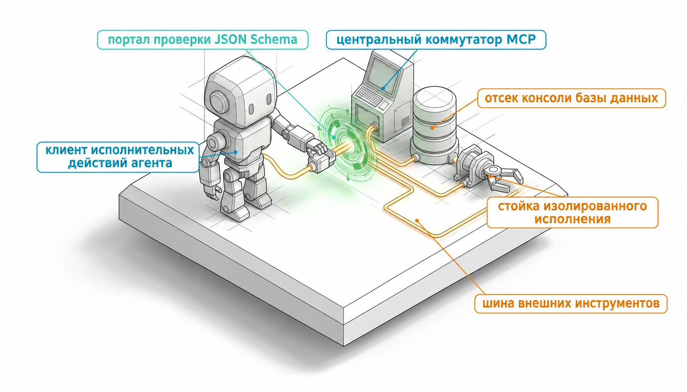
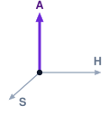
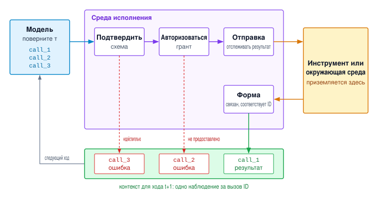
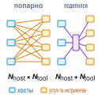
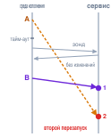
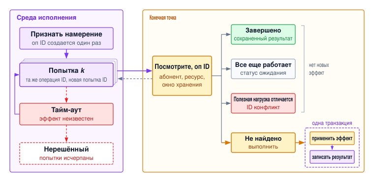
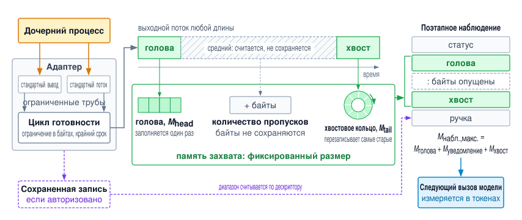
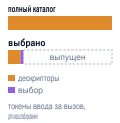
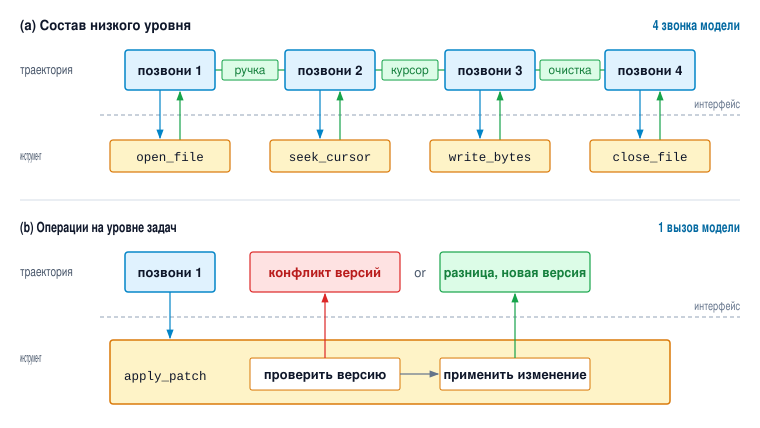

Содержание главы
Содержание
- 7 Вызов инструментов
- 7.1 Граница инструментов
- 7.2 Архитектура подсистемы инструментов
- 7.3 Схемы интерфейса инструментов
- 7.4 Взаимосовместимое обнаружение инструментов
- 7.5 Повторение неопределённых действий
- 7.6 Усечение потока наблюдений
- 7.7 Нормализация вывода терминала
- 7.8 Асинхронная диспетчеризация инструментов
- 7.9 Проектирование активного набора инструментов
- 7.10 Визуальное воздействие и использование компьютера
- 7.11 Заблуждения и ловушки
- 7.12 Итоги
- 7.13 Историческая перспектива и дополнительное чтение
- 7.14 Упражнения
7 Вызов инструментов

Назначение
Почему вызов инструмента, который успешно разбирается, всё ещё нуждается в среде исполнения между собой и внешним миром?
Вызов инструмента — первая точка, в которой выход модели может изменить что-то за пределами диалога. Предложение, успешно проходящее разбор, может по-прежнему указывать на цель, к которой задача доступа не получала, действовать над файлом, изменившимся с момента чтения моделью, или повторять операцию, чья первая попытка уже вступила в силу. Поэтому само по себе формирование вызова не может его авторизовать. Между предложением и эффектом обязан стоять каркас: он проверяет каждый вызов по его схеме, сверяет его с полномочиями, которыми обладает задача, диспетчеризует его и фиксирует, что фактически известно о результате. Эта запись часто неполна. Запрос, по которому истек таймаут, мог быть потерян, мог всё ещё выполняться или мог завершиться успешно без доставленного ответа, и слепой повтор может перезапустить исправно работающие воркеры или применить то же изменение дважды. Исход должен оставаться явно неизвестным, пока каркас его не установит, — а не восполняться рассказом модели или оптимизмом каркаса. То, что возвращается модели, само по себе является проектным решением. Журнал, намного превосходящий возможности следующего вызова, нужно сократить, не скрыв при этом важной строки, а задача, пережившая один ход, должна отчитаться так, чтобы её не приняли за завершённую. Вызов инструментов сохраняет за моделью роль предлагающей стороны, а полномочия оставляет каркасу, который реализует их только на основании проверяемых им свидетельств.
Цели обучения
- Проследить предлагаемый вызов инструмента через валидацию, авторизацию, диспетчеризацию и сопоставленное наблюдение до следующего вызова модели
- Спроектировать дескриптор инструмента, разделяющий структурную валидацию и предусловия времени действия, принудительно исполняемые вместе с эффектом
- Отличать обнаружение инструментов и связность от полномочий, необходимых для вызова операции
- Выбирать слепой повтор, дедупликацию на эндпоинте или сверку для неопределённого эффекта — на основе семантики операции и доли потерь
- Проектировать ограниченные наблюдения, сохраняющие статус исполнения, информацию об опущениях и объём доступных свидетельств
- Сравнивать стратегии ожидания и возобновления для долгоживущих инструментов по задержке обнаружения, стоимости инференса и сохраняемому надзору
- Оценивать гранулярность набора инструментов по стоимости контекста, стоимости принятой задачи и принудительно ограниченному радиусу действия — для структурированных, универсальных и computer-use интерфейсов
7.1 Граница инструментов
Агент, которому поручено перезапустить контейнер на staging-сервере — типичное изменение инфраструктуры, которое делает агент устранения неполадок (Четыре маяка — рабочие нагрузки), — формирует короткий вызов инструмента. Каркас проверяет вызов по схеме инструмента, подтверждает, что эта сессия может перезапустить указанный контейнер, и отправляет POST /containers/srv-stage-04/restart. Через две секунды сокет отдаёт таймаут. Запрос мог быть потерян, задержан, всё ещё исполняться или завершиться без доставленного ответа. Повтор мог бы перезапустить исправно работающие воркеры, а первая попытка может всё ещё вступить в силу после таймаута.

Ось Authority, замкнутая на границе инструментов посредничеством каждого предлагаемого вызова.
Ничего экзотического в этом сбое нет. Агент ремонта встречает те же вопросы на каждом ходе ремонта пула соединений. Он читает src/pool.py, заменяет текст, выведенный из прочитанной версии, запускает набор тестов и получает журнал, намного превосходящий возможности следующего вызова модели. Каждый шаг — вызов инструмента, и каждый может быть отклонён, остаться запущенным, завершиться без ответа или вернуться с большим объёмом вывода, чем следует видеть модели.
Построенные к этому моменту компоненты не разрешают эти вопросы. Сообщения и определения инструментов дал модели структурированный способ предлагать вызовы. Главы о памяти уже опирались на инструменты для чтения источников, поиска по индексам и обновления записей, не рассматривая, что происходит между предложением и его результатом. Результат поиска идентифицирует наблюдавшуюся версию, но то, сохранил ли файл эту версию к моменту коммита последующего изменения, — предусловие времени действия, которое кто-то обязан принудительно исполнять. Предложение называет операцию и её аргументы. Оно не решает, может ли эта задача исполнить операцию, не решает, не исполнилась ли уже более ранняя попытка, и не определяет, что получит следующий вызов модели.
Граница инструментов каркаса — путь между предлагаемым вызовом и средой, которую он должен изменить. Граница валидирует каждое предложение, сверяет его с полномочиями задачи, диспетчеризует его, отслеживает известное об его эффекте и возвращает ограниченное наблюдение, сопоставленное с вызовом. На всём этом пути она разделяет три вещи, которые смешивает таймаут: что предложила модель, какой эффект имела операция и какими свидетельствами располагает каркас о том и другом. Глава прослеживает один вызов от предложения до наблюдения, затем расширяет картину до эффектов с неопределённым исходом, до вывода, слишком большого для возврата целиком, до задач, переживающих ход модели, и наконец до каталога инструментов, который видит модель.
↩︎ Разделение предложения, эффекта и наблюдения установлено в Почему среда исполнения управляет траекторией, а не отдельным вызовом.
7.2 Архитектура подсистемы инструментов
Когда на restart_container истекает таймаут сокета, каркас, который удаляет неудавшийся вызов из истории или сообщает о нём как об аккуратном сбое, подталкивает следующий ход модели к выдаче дублирующего перезапуска. Список 1 показывает staging-перезапуск как один ход цикла в не привязанном к провайдеру виде. Каркас сообщает то, что он знает об этой попытке, и следующий вызов модели получает этот результат вместе с более ранним запросом и предложением.
[
{"role": "user",
"content": "Stage-04 is serving a stale config. Restart it."},
{"role": "assistant",
"content": [
{"type": "tool_call", "id": "call_1", "name": "restart_container",
"arguments": {"container_id": "srv-stage-04"}}]},
{"role": "tool",
"content": [
{"type": "tool_result", "call_id": "call_1",
"content": {"transport_status": "timeout", "effect_status": "unknown"}}]}
]Каркас сопоставляет каждый результат с соответствующим вызовом по явному идентификатору, а не только по порядку сообщений. Этот идентификатор устанавливает происхождение сообщений между асинхронными ходами, но само по себе сопоставление не разрешает вопрос, выполнила ли целевая служба запрошенную мутацию. Предотвращение дублирующих перезапусков требует операционного контракта идемпотентности, развиваемого в Глава 7.5. Даже если последующий ход модели предполагает, что служба восстановилась, каркас сохраняет лежащую в основе неопределённость. Он разрешает повтор только тогда, когда это поддерживают идемпотентная семантика, контракт дедупликации на эндпоинте или свидетельства сверки, исключающие и всё ещё задержанную попытку. Свежее свидетельство того, что контейнер выглядит неизменным, само по себе недостаточно (Глава 7.5.1).
7.2.1 Один посредничеством сопровождаемый цикл
Между сообщениями tool_call и tool_result из Список 1 лежит путь посредничества каркаса. Если бы каркас передавал предложенный моделью вызов напрямую в исполнительный бэкенд, а необработанный вывод — напрямую обратно в промпт, неавторизованный вызов изменял бы хост, а неограниченный журнал переполнял бы следующее окно контекста. Вместо этого, как только инференс-движок формирует структурированный блок вызова на поверхности вызова со стороны модели, исполнение полностью переходит к каркасу, который сопровождает цикл между предложенным вызовом и наблюдением следующего хода через четыре координированных этапа Рисунок 1: валидацию аргументов, авторизацию по политикам, диспетчеризацию с отслеживанием исхода и формирование наблюдения.
↩︎ Шестиэтапный жизненный цикл хода, фазы валидации, исполнения и наблюдения которого уточняют эти четыре этапа, установлен в Шесть фаз хода.
Валидация запроса разбирает предлагаемые аргументы по объявленной схеме инструмента, проверяя обязательные поля, типы данных, диапазоны значений и реляционные инварианты между параметрами. Динамические ограничения, зависящие от изменчивого состояния среды, нельзя разрешить на этой границе. Система должна оценивать их на границе исполнения, а не выводить из исторического контекста. Затем авторизация операции сверяет полномочия безопасности и политики доступа активной сессии с целевым ресурсом — как для операций чтения, так и для мутаций состояния — и допускает вызов с учётом его бюджетов конкурентности и лимитов частоты.
После авторизации диспетчеризация отправляет разрешённую операцию нижележащему исполнительному провайдеру, а отслеживание исхода ведёт идентичность и статус исполнения. Это отслеживание различает отклонения до диспетчеризации, активные фоновые задачи, успешно доложенные результаты и неподтверждённые состояния исполнения. Транспортный таймаут означает лишь, что каркас превысил свой срок ожидания, оставив состояние удалённого исполнения неподтверждённым. Наконец, формирование наблюдения сопоставляет необработанное возвращённое значение с исходным идентификатором вызова, усекает полезные нагрузки под бюджеты контекста, нейтрализует терминальные escape-последовательности и снабжает вывод точными метаданными статуса. Если вывод журнала пришлось усечь, полезная нагрузка явно раскрывает это опущение; если система вернула билет асинхронной задачи, формирование наблюдения доложит его как подтверждение, а не как завершённый эффект.
Некоторые проверки валидации должны исполняться на удалённом эндпоинте, потому что безопасность требует атомарности с самим изменением состояния. Например, изменение, обусловленное версией исходника, требует, чтобы проверка версии происходила в lockstep с обновлением. Следовательно, каркас хоста и удалённый эндпоинт каждый принудительно исполняет свою границу. Эндпоинт проверяет доступ независимо — даже для запросов, которые каркас хоста уже пропустил. Это разделение — аргумент «сквозного контроля» (end-to-end), применённый к защите системы. Проверка авторизации, зависящая от приватного состояния эндпоинта, может быть завершена только на этом эндпоинте, что делает предварительные проверки на уровне хоста полезной оптимизацией, а не авторитетной заменой (Saltzer и др. 1984 г.).

Когда обслуживающий интерфейс возвращает нативные структурированные блоки вызовов, каркас извлекает предлагаемую операцию и аргументы напрямую. Когда модель формирует предложения внутри неструктурированного свободного текста, каркас должен сначала обнаружить и разобрать эти фрагменты, прежде чем начнётся валидация. Ограниченное декодирование (constrained decoding) устраняет синтаксические сбои разбора, принудительно применяя правила грамматики непосредственно при генерации токенов. Однако синтаксис сам по себе никогда не устанавливает операционную безопасность. Существует ли целевой ресурс, остаётся ли наблюдавшаяся версия актуальной и обладает ли текущая сессия полномочиями на исполнение — всё это проверки времени исполнения, которые не способна выполнить ни одна грамматика декодирования.
7.2.2 Полное посредничество
Как и грамматика декодирования не способна проверить полномочия на исполнение, так и инструкция в системном промпте касаться только staging-контейнеров или читать только внутри /workspace не ставит барьера между галлюцинированным или внедрённым через промпт вызовом инструмента и операционной системой хоста. Защита интерфейса инструментов опирается на полное посредничество (Saltzer и Schroeder 1975 г.) — принцип защиты, который уже требовал от обработчика инструментов из Почему вероятность токенов не может заменить проверок перепроверять валидированный путь при фактическом исполнении чтения. На границе инструментов посредничество должно охватывать и чтения, и мутации. Упоминание имени инструмента не даёт модели всесторонней власти каркаса, как и получение наблюдения не делает внешние данные доверенными.
Определение 7.1: Полное посредничество
Полное посредничество требует, чтобы каждый предлагаемый доступ проходил через принудительно исполняемую границу авторизации до того, как достигнет защищаемого ресурса. В каркасе агента опосредуется и обратный путь, так что наблюдения входят в контекст под явными контрактами доступа, полезной нагрузки и статуса.
- Значимость: внешне корректный вызов не может обойти проверки того, что сессия вправе читать, изменять или раскрывать.
- Различие: валидация схемы устанавливает структурную допустимость, а не разрешение. Нормализация наблюдения устанавливает пригодное представление, а не истинность его содержимого или невосприимчивость к промпт-инъекции — управляемому атакующим содержимому, пытающемуся перенаправить модель.
- Типичная ошибка: трактовать инструкцию в промпте вроде «никогда не удаляй продакшн-данные» как барьер доступа. Каркас обязан принудительно исполнять это ограничение даже тогда, когда модель предлагает запрещённое действие.
Сформулировать полное посредничество как политику само по себе не гарантирует, что каждый маршрут инструментов соблюдает его. Андерсон формализовал архитектурный механизм, необходимый, чтобы эта гарантия держалась на каждом пути доступа: мониторе ссылок (reference monitor) (Anderson 1972 г.).
Определение 7.2: Монитор ссылок
Монитор ссылок — компонент принуждения, через который проходит каждый доступ к защищаемому ресурсу. Он должен быть защищён от вмешательства, вызываться всегда и быть достаточно малым для верификации. В каркасе агента путь валидации и авторизации хоста — монитор ссылок для предлагаемых вызовов инструментов, а проверка доступа каждого эндпоинта — второй монитор для ресурсов, которыми этот эндпоинт владеет.
- Значимость: три требования превращают полное посредничество из намерения в проверяемое свойство структуры каркаса.
- Различие: политика задаёт разрешённые доступы, тогда как монитор ссылок предоставляет непроходимый механизм, оценивающий и принудительно исполняющий эти правила при каждой попытке.
- Типичная ошибка: добавить маршрут инструмента, не проходящий через монитор, — например, неограниченную оболочку с доступом к сети рядом с проверяемым файловым адаптером, что делает проверки адаптера совещательными.
Эти три требования диктуют конкретные архитектурные решения на границе инструментов. Защита от вмешательства (tamper-proofing) гарантирует, что ни сгенерированные моделью токены, ни недоверенные данные, принятые из внешних систем, не могут изменить правила авторизации, принудительно исполняемые каркасом. Всегда вызываемый требует, чтобы каждый операционный путь проходил через монитор без исключений. Так, выставление неограниченного запуска оболочки рядом с песочничным файловым инструментом подрывает границу защиты: агент может обойти файловые ограничения, выдавая команды оболочки. Наконец, верифицируемость требует, чтобы решения политики были детерминированными, аудируемыми программными проверками. Хотя вспомогательный классификатор или модель-ограничитель может оценивать операционный риск, вероятностный вывод не поддаётся верификации в строгом системном смысле; сам монитор должен принудительно исполнять детерминированные границы доступа.
Из полного посредничества непосредственно следуют два операционных правила. Правило полномочий устанавливает, что полномочия на исполнение выводятся исключительно из активных грантов безопасности сессии, пересматриваемых при каждом вызове. Операции чтения требуют столь же строгого посредничества, как и мутации состояния, потому что возврат приватных записей раскрывает чувствительные данные, даже когда состояние среды не меняется. Ничто из того, что видит или формирует модель, не расширяет эти полномочия — ни схемно-корректный вызов, ни описание инструмента, заявляющее широкие права; последующие разделы применяют это правило к каждому новому артефакту, который они вводят. Правило объёма свидетельств устанавливает, что наблюдение подтверждает только конкретную метрику или условие, измеренное инструментом в этом вызове. Сообщение о том, что процесс операционной системы завершился с кодом ноль, подтверждает только завершение процесса; оно не доказывает завершение задачи в целом, что остаётся отдельным суждением, подчинённым замыканию инвариантов (принцип 1). Необработанный текст вывода также остаётся недоверенными данными даже после того, как каркас удалил терминальное форматирование и нормализовал метаданные: наблюдения поставляют эмпирические свидетельства о состоянии, но не несут всесторонней власти диктовать последующие действия.
7.2.3 Пакеты и принудительные вызовы
Когда один ответ модели предлагает прочитать src/pool.py и внести патч в src/pool.py в одном пакете, параллельная отправка обоих вызовов даёт недетерминированный результат в зависимости от того, какой поток первым доберётся до файла. Когда операции в пакете строго читающие и независимые — например, чтение трёх разных исходных файлов, — среда исполнения может отправить их конкурентно и сопоставить каждую возвращённую наблюдаемую величину с идентификатором соответствующего вызова. Сбой одного чтения не делает недействительными конкурентные чтения, которые завершились успешно. Каждый вызов в пакете по-прежнему должен индивидуально проходить валидацию и авторизацию и расходовать общий бюджет ресурсов и лимитов частоты запросов.
Когда инструменты декларируют достоверный след по ресурсам — явные множество чтения src/pool.py не проходят первое, поскольку правка записывает файл, который читает чтение. Однако эта гарантия полностью зависит от полноты деклараций следов: любой скрытый побочный эффект или незадекларированная общая зависимость делает гарантию конкурентности недействительной.
Операции с непрозрачными побочными эффектами, например произвольные команды shell, имеют неизвестные следы. В таких случаях среда исполнения должна либо изолировать среду выполнения, либо консервативно сериализовать вызовы, либо отклонить пакетное выполнение в пользу мелкогранулярных инструментов. Когда операции имеют причинно-следственные зависимости, ограничения на порядок должны поступать из политики рабочего процесса или явного графа зависимостей. Последовательный порядок токенов, порождаемых моделью, — ненадёжное свидетельство предполагаемого порядка выполнения. Пакетирование также не подразумевает атомарности: пакет образует транзакцию только тогда, когда нижележащая инструментальная подсистема явно предоставляет транзакционную семантику полного отката «всё или ничего».
Среда исполнения может также управлять тем, предлагает ли модель действие. Используя контроль выбора инструментов на уровне обслуживания (tool-choice control), среда исполнения может настроить вызов инструментов как необязательный, потребовать, чтобы модель вызвала хотя бы один инструмент, ограничить выбор одной конкретной именованной операцией или вовсе запретить выполнение инструментов. Оркестрирующие движки используют эти ограничения для управления фазами выполнения: например, принудительное диагностическое чтение перед разрешением правки или запрет вызовов инструментов, чтобы заставить модель выдать итоговое текстовое резюме. Однако элементы управления выбором инструментов лишь формируют генерацию модели; по правилу выдачи полномочий принуждение к выбору инструмента не даёт никакой операционной авторизации. Выполнение каждого этапа этого опосредованного цикла требует однозначного представления запроса, устанавливающего строгую операционную границу между статической валидацией схемы и динамическими предусловиями, проверяемыми в момент отправки.
7.3 Схемы интерфейса инструментов
Когда агент-ремонтник заканчивает инспекцию ревизии r17 файла src/pool.py и предлагает патч, дающий r18, граница между статической валидацией и проверками в момент отправки становится осязаемой. Прежде чем применять изменение к рабочему пространству, хостовая среда исполнения должна разрешить четыре вопроса: какую операцию инструмента выбрала модель, что обозначают её аргументы, обладает ли текущая задача полномочиями, необходимыми для выполнения мутации, и соответствует ли src/pool.py по-прежнему состоянию ревизии r17, на котором модель основывала своё предложение. Корректно сформированный JSON-груз удовлетворяет синтаксической структуре, но один лишь синтаксис не может ответить на эти операционные вопросы.
Дескриптор инструмента определяет функциональное назначение операции, входные параметры, ожидаемые возвращаемые значения и побочные эффекты выполнения. Внутри этого дескриптора схема аргументов кодифицирует машиночитаемые проверки: обязательные поля, примитивные типы, допустимые перечисления и поддерживаемые ограничения размеров. Эти спецификации адресованы двум разным аудиториям: описания на естественном языке направляют языковую модель при выборе и параметризации инструментов, а окружающая среда исполнения и нижестоящие конечные точки сервиса валидируют и принуждают интерфейсный контракт.
7.3.1 Семантика дескриптора
Даже когда каждое поле проходит проверку типов JSON, невысказанные граничные случаи в дескрипторе могут уничтожить состояние рабочего пространства: если инструмент замены файла не уточняет, является ли пустая строка replacement отсутствием операции или записью нулевой длины, модель, пытающаяся оставить src/pool.py неизменным, сотрёт файл. Поэтому инструмент наподобие conditional_replace_file, заменяющий один файл в назначенном рабочем пространстве задачи и фиксирующий изменение только если файл по-прежнему соответствует ожидаемой версии исходника, обязан вместе с типами указывать точные семантические инварианты. Поле path разрешается строго относительно назначенного рабочего пространства, а не произвольного места на хосте; expected_version идентифицирует базовую ревизию исходника, которую инспектировала модель; replacement содержит полное заменяющее содержимое в документированном формате конечной точки, причём пустая строка явно определена как усечение файла до нуля байт.
Полная замена файла сохраняет прозрачность этого примера предусловия, хотя производственные среды исполнения часто предпочитают патчи, привязанные к строкам, или структурированные диффы, чтобы сократить накладные расходы на генерацию токенов. Сравнение интерфейсов в Сравнение выходных интерфейсов показывает, что локализованные правки сокращают порождаемый вывод, но по-прежнему требуют той же координации между проверкой предусловий и атомарной мутацией. Список 2 иллюстрирует машиночитаемую структуру аргументов для этого контракта. Груз запроса не содержит ни токена учётных данных, ни флага привилегий, через которые модель могла бы расширить свои права доступа, а хостовая среда исполнения независимо привязывает вызов к авторизованному контексту выполнения задачи.
{
"type": "object",
"required": ["path", "expected_version", "replacement"],
"additionalProperties": false,
"properties": {
"path": {
"type": "string",
"minLength": 1,
"description": "File path relative to the designated workspace."
},
"expected_version": {
"type": "string",
"minLength": 1,
"description": "Source version returned with the inspected file."
},
"replacement": {
"type": "string",
"description": "Complete replacement text, written as UTF-8."
}
}
}Контракт результатов дескриптора требует той же точности. Завершённая замена сообщает затронутый путь и назначенный ей новый токен ревизии. Конфликт версий явно сообщает, что целевой файл разошёлся и замена не была применена. Среда исполнения должна также различать детерминированные клиентские ошибки (некорректные аргументы или недостаточные полномочия) и неопределённые транспортные сбои, когда состояние конечной точки остаётся неизвестным после разрыва соединения. Исчерпывающий дескриптор моделирует все четыре исхода, включая сетевые тайм-ауты, когда подтверждение не приходит вовсе.
Точные имена полей и описания устраняют устранимую двусмысленность при генерации. Например, инструмент чтения файла должен указывать, считает ли аргумент offset байты, символы или строки. Аналогично параметр тайм-аута должен указывать единицы измерения и уточнять, ограничивает ли он установление соединения, удалённое выполнение или сквозную доставку ответа. Хотя ясная документация направляет модель к валидным параметрам, среда выполнения должна программно принуждать все значения по умолчанию, наборы перечислений и числовые границы. Явная документация инструментов измеримо повышает надёжность генерации. Patil и др. (2023 г.) показал, что модели, обученные обусловливать вызовы инструментов на извлечённой документации API, значительно реже выдумывают несуществующие операции и галлюцинируют невалидные аргументы, чем модели, опирающиеся исключительно на необработанный промптинг.
7.3.2 Структурные проверки, проверки полномочий и состояния
Если генерация прерывается на лимите выходных токенов или из-за разрыва соединения клиентом посреди строки replacement, а снисходительный парсер закрывает JSON-объект или принимает частичный груз, то выполнение этого вызова запишет на диск полузаконченный src/pool.py. Поэтому перед разбором любых аргументов среда исполнения проверяет, что модель породила завершённый кандидат в соответствии с контрактом вызова, определённым в Контракт вызова, и немедленно прерывается при усечённом ответе. Как только статус выполнения подтверждает полный вывод, среда исполнения разбирает кандидата и валидирует его аргументы против зарегистрированной JSON-схемы инструмента, прежде чем выполнять какие-либо доменные проверки.
В этом примере замены пропуск expected_version или числовое значение path немедленно проваливает структурную валидацию. Установка "additionalProperties": false в Список 2 также заставляет парсер отклонять галлюцинированные аргументы вроде force или recursive. Однако структурное соответствие решает только синтаксис. Проверка того, находится ли путь внутри назначенной задаче песочницы, и определение того, содержит ли целевой файл по-прежнему инспектированную ревизию исходника, требуют отдельных шагов оценки. Как обобщено в Таблица 1, среда исполнения принуждает эти гарантии через слоистые границы.
| Проверка | Вопрос к предлагаемой правке | Что успешное прохождение не устанавливает |
|---|---|---|
| Структура аргументов | Присутствуют ли обязательные поля с заявленными типами и поддерживаемыми ограничениями? | Путь разрешён, версия актуальна или замена является корректным исправлением. |
| Полномочия | Разрешают ли текущие выдачи задачи эту операцию над разрешённой целью? | Аргументы укладываются в ресурсные лимиты или операция завершится успешно. |
| Ресурсные лимиты | Укладывается ли запрос в принуждаемые лимиты груза, выполнения и результатов? | Цель по-прежнему удовлетворяет предусловиям операции в момент возникновения эффекта. |
| Доменные предусловия | Поддерживает ли цель эту операцию и совпадает ли её версия в момент применения обновления? | Возвращённые свидетельства установят принятие задачи. |
Строка, отформатированная как путь к файлу, не является ограниченной ссылкой на ресурс.1 Реализация инструмента должна канонизировать и разрешать цель внутри авторизованного рабочего пространства, учитывая симлинки, выходы за пределы каталога через обход путей и изменения псевдонимов путей, которые могут перенаправить операцию. Аналогично объявление replacement строкой не ограничивает её занимаемый объём памяти. Производственные адаптеры принуждают явные ограничения на размер байт входящих грузов, ограничивают объём захватываемого диагностического вывода и применяют строгие тайм-ауты выполнения. Статическая валидация схемы обрабатывает синтаксис входных данных, тогда как динамическая проверка состояния, ограничение путей и троттлинг ресурсов остаются обязанностью среды исполнения. Правила схемы для определений инструментов содержит дескриптор ограниченной правки вместе с правилами схемы для обязательных полей, лимитов размеров, явных единиц и семантики вариантов.
Декодирование под управлением грамматики не меняет это разделение труда. Маска на уровне токенов устраняет синтаксические ошибки до того, как кандидат существует, но она не может разрешить ссылку на файловую систему, оценить политику доступа или сравнить тег версии с текущей ревизией файла. Хостовая среда исполнения валидирует материализованный запрос, а конечная точка проверяет динамические предусловия в момент возникновения эффекта. Это разделение воплощает типизированный контракт действия (принцип «Типизированный контракт действия»). Контракт допускает вызов в окружение только после проверок валидации, предусловий и авторизации, причём предусловие версии принуждается вместе с мутацией, а не во время более раннего чтения.
↩︎ Структурная гарантия декодирования под управлением грамматики и оставляемые им открытыми проверки ссылок и полномочий установлены в Что гарантирует маска грамматики.
7.3.3 Условные обновления
Более раннее чтение подтвердило лишь, что src/pool.py соответствовал ревизии r17 в момент наблюдения. Если другой агент или фоновый процесс изменяет src/pool.py, пока модель порождает свой патч, безусловная запись молча перезапишет эти промежуточные изменения. Параметр expected_version привязывает контракт получения из Контракт поиска напрямую к контракту мутации, принуждаемому здесь, так что гонка потерянных обновлений не может завершиться успешно. Чтобы предотвратить потерянное обновление, сервис хранения должен проверить ожидаемую версию и зафиксировать замену как единое атомарное условное обновление — эквивалент аппаратного примитива compare-and-swap (CAS) на уровне хранения.2 В этом примере сервис исходников рабочего пространства выполняет всю последовательность внутри единой границы координации: он разрешает целевой файл, проверяет, что его текущая ревизия соответствует expected_version, записывает новое содержимое и публикует полученный токен ревизии. Разложение этой последовательности на неатомарные операции (чтение ревизии, её проверка в пространстве пользователя, затем выдача записи) вновь открывает окно гонки, в которое могут вмешаться конкурентные писатели. Атомарное условное обновление закрывает этот разрыв между проверкой и использованием.
↩︎ Почему инжиниринг контекста не может закрыть гонку между обновлением и исполнением и оставляет проверку ревизии границе инструментов, установлено в Обнаружение изменений и ограничение неопределённости.
Эта ветвь исполнения даёт два различных операционных исхода:
- Если текущая ревизия исходника остаётся
r17, обновление фиксирует замену и возвращаетr18, идентифицирующий новую ревизию, порождённую правкой. - Если другой писатель изменил исходник раньше, проверка версии проваливается. Сервис отклоняет замену, оставляет состояние хранения неизменным и возвращает явный статус конфликта версий.
После конфликта среда исполнения направляет агента выполнить авторизованное чтение обновлённого исходного файла и синтезировать новое предложение, а не вслепую перезаписывать промежуточные изменения. Эта гарантия конкурентности действует лишь до тех пор, пока все мутации маршрутизируются через общую границу координации. Если внешние процессы или неуправляемые скрипты изменяют файлы прямо на диске, минуя сервис версий, токены версий не обеспечивают защиты, и конечная точка не может гарантировать целостность. Предварительные просмотры (dry run) следуют тому же принципу. Пробный запуск подтверждает, что предлагаемый патч чисто применяется к ревизии r17 в момент оценки, но не устанавливает никакой блокировки на эту ревизию. Среда исполнения должна повторно проверить все предусловия, полномочия и токены версий при выполнении боевой записи.
Получение успешного подтверждения r18 подтверждает, что модификация файла зафиксирована на диске, но не устанавливает, что лежащий в основе баг пула соединений устранён. Демонстрация функциональной корректности требует эмпирической валидации. Последующий успешный запуск test_waiter_notified_on_return — свидетельство того, что патч исправляет отработанный случай гонки, тогда как более широкое принятие задачи по-прежнему определяется верификационным набором проекта. На сетевом уровне потерянный ответ оставляет вызывающего в неведении: зафиксировал ли сервер правку или потерпел неудачу до обработки груза. Контракты повторов и идемпотентности, проанализированные в Глава 7.5, разрешают эту операционную неопределённость.
7.3.4 Диагностика отклонений
Если отклонённый вызов инструмента возвращает только "Error: operation failed", модель на следующем ходу будет гадать вслепую. Если при отказе в доступе в сообщении об ошибке выгружается дерево каталогов хоста и переменные окружения, чтобы объяснить, почему путь был отклонён, само сообщение об ошибке раскрывает несанкционированное состояние. Когда операция терпит неудачу, среда исполнения должна вернуть структурированный ограниченный диагностический отчет, изолирующий условие отказа без утечки информации за пределы авторизованных выдач задачи. Структурное отклонение должно идентифицировать отсутствующее свойство expected_version. Конфликт конкурентности должен сообщать, что ревизия r17 была вытеснена. Отказы в полномочиях, напротив, должны чисто отказывать в доступе, не раскрывая структуры каталогов или подсказок о путях, которые агент мог бы прощупывать. Среда исполнения регистрирует, возникло ли отклонение локально при клиентской валидации схемы или удалённо на конечной точке сервиса, позволяя нижестоящей логике принятия решений различать неопробованное предложение и неудавшуюся удалённую мутацию. Ясные, ограниченные диагностики дают модели точные свидетельства, необходимые для синтеза валидной ревизии, которая затем должна пройти тот же конвейер валидации.
Дескриптор, его многоуровневые проверки и его диагностика вместе определяют контракт одного инструмента, и все рассмотренные до сих пор проверки предполагали, что среда исполнения уже располагает этим контрактом и знает, какой конечный узел его реализует. В реальном развёртывании контракт приходит извне: из репозиторного сервера, из сервиса другой команды, от поставщика интеграции. Как среда исполнения узнаёт, какие операции существуют, и почему само по себе знание о существовании операции не даёт никаких полномочий — следующая проблема. Сколько из обнаруженных дескрипторов выкладывать на каждом ходу — отдельный вопрос бюджета, который разбирается в Глава 7.9.
7.4 Взаимосовместимое обнаружение инструментов
На практике реализация инструмента, такая как conditional_replace_file, может жить в нескольких окружениях: во внутрипроцессном адаптере, скомпилированном в приложение, в отдельном фоновом демоне или в удалённом микросервисе под управлением другой команды. Прежде чем модель сможет предложить корректный вызов, хостовая среда исполнения должна выяснить, какие операции открывает этот конечный узел и как кодировать их аргументы. Эти метаданные интерфейса поставляет фаза обнаружения. Однако по правилу выдачи полномочий само по себе знание о существовании операции не даёт права на её выполнение. Обнаружение определяет синтаксис интерфейса, тогда как авторизация управляет правами на исполнение.
7.4.1 Model Context Protocol
При создании автономного агента с небольшим статическим набором инструментов регистрация локальных функций непосредственно внутри процесса проста и быстра. Однако когда несколько хостовых приложений должны подключаться к независимо сопровождаемым сервисам инструментов, индивидуальная интеграция «точка–точка» быстро становится непрактичной. Исходная проблема комбинаторная. Без общего интерфейса для интеграции

Общий протокол превращает попарные адаптеры в одну реализацию на каждую сторону.
Разделение инструментов через границу протокола также даёт изоляцию сбоев. Когда инструмент работает в отдельном процессе, утечка памяти, сегментация или необработанный блокирующий вызов обрушивают только сервер инструмента, не разрушая основной цикл оркестрации агента. Тем не менее стандартизация протокола не устраняет инженерных обязанностей. Интеграторы по-прежнему должны определять семантику инструментов, проверять совместимость версий и обеспечивать соблюдение политик безопасности. Локальные внутрипроцессные плагины и вынесенные за пределы процесса серверы инструментов — это осознанные развёртывательские компромиссы, а не взаимоисключающие или эволюционные этапы.
Протокол Model Context Protocol (MCP) воплощает эту архитектуру. MCP структурирует интеграцию между тремя отдельными сущностями: хостовым приложением (например, интерактивной средой или средой исполнения агента), клиентами, управляющими соединениями, и серверами, открывающими возможности. Хост запускает по одному клиенту на каждый подключённый сервер, и каждый клиент говорит по протоколу от имени хоста. Серверы могут работать как локальные дочерние процессы или как удалённые сетевые сервисы. Это архитектурное разделение проясняет зоны ответственности при интеграции, не предписывая конкретную песочницу исполнения (Model Context Protocol 2025 г.).
Каждая модель развёртывания соответствует разным эксплуатационным требованиям. Локальный дочерний процесс держит файловые операции рядом с рабочей копией и упрощает управление жизненным циклом процессов. Напротив, удалённый сервис может централизовать хранение учётных данных, пул соединений и доступ к бэкендам без репликации чувствительных конфигураций на каждую хостовую машину. Оба варианта, впрочем, вносят свои режимы отказов и границы ресурсов. Неизолированный локальный процесс по-прежнему имеет доступ к любой локальной файловой системе, которую ему выделили, а разорванное сетевое соединение может оставить выполняющуюся операцию невидимо продолжаться на удалённом сервере. Выбор между ними определяется тем, где должны находиться управление ресурсами и применение политик, — сопоставлением задержки транспорта с длительностью исполнения инструмента, а не предположением о том, что какая-то транспортная топология универсально лучше.
7.4.2 Перечисление и вызов инструментов
Подключение хостового клиента к нескольким серверам создаёт немедленную опасность маршрутизации: если два подключённых сервера оба анонсируют операцию apply_patch, а хост направляет вызовы по голому имени функции, недоверенный сервер может незаметно затенить патч-инструмент репозитория. Хотя MCP разделяет обнаружение и исполнение с помощью двух основных сетевых операций (tools/list для обнаружения доступных определений инструментов и tools/call для исполнения3), хост должен привязать каждое обнаруженное определение к своему конкретному экземпляру сервера и локальной политике, прежде чем открывать его. По сети каждое определение анонсирует уникальное имя, описание на естественном языке и JSON Schema, управляющую допустимыми аргументами; вызов называет целевой инструмент и передаёт соответствующий словарь аргументов. Эти сообщения устанавливают механику обмена интерфейсами, но не права на исполнение задачи. Спецификация инструментов MCP (Model Context Protocol 2025 г.) определяет эти форматы сообщений и предписывает серверную валидацию входных данных и контроль доступа.
Чтобы проследить, где во время исполнения находятся границы политик, рассмотрим репозиторный сервер, анонсирующий две иллюстративные операции: read_source и apply_patch. Конкретная последовательность интеграции проходит через несколько контрольных точек проверки:
- Клиент хоста запрашивает
tools/list, и хост допускает каждую возвращённую схему только если его собственная политика это разрешает (например, потому что сервер и его версия есть в белом списке), явно привязывая каждую допущенную схему к этому экземпляру сервера и его локально управляемой политике инструментов, чтобы ни один другой сервер не мог её затенить. - Хост определяет, какие из допущенных определений открыть в контексте модели для задачи ремонта пула соединений.
- Когда модель предлагает операцию, среда исполнения хоста валидирует аргументы по схеме и проверяет авторизацию на уровне задачи, прежде чем передать запрос.
- Получив
tools/call, конечный узел независимо проверяет запрос на соответствие правам операционной системы и управлениям доступа к данным, которыми он управляет.
Для ремонта пула соединений обнаружение существования apply_patch не меняет ни разрешённых путей правки, ни предусловий ожидаемой версии. Гарантия атомарных условных обновлений целиком следует из реализации сервера, а не из обнадёживающего имени функции. Если конечный узел не обеспечивает гарантий условных обновлений, среда исполнения должна отвергнуть его как несовместимый с контрактным обязательством безопасности задачи.
7.5 Повторение неопределённых действий
Разрешение инициировать рестартер стейджинга POST /containers/srv-stage-04/restart не говорит, что произошло, когда его сокет вышел по таймауту. В момент таймаута клиент не может определить, был ли запрос потерян в пути, задержан в сетевой очереди, всё ещё исполняется в демоне, остановился после частичной реконфигурации сервиса или завершился, потеряв только своё подтверждение. Клиентский таймаут4 фиксирует лишь то, что вызывающий перестал ждать ответа; он не сообщает ничего о состоянии исполнения на конечном узле (Cristian 1991 г.). Чтобы решить, что делать дальше, нужны две ортогональные вещи — поведение операции при повторении и свидетельства о прежней попытке, — а предложение модели повторить не даёт ни того, ни другого. Урегулирование до повтора (принцип «Урегулирование до повтора») позволяет повторить неопределённое изменение только после того, как показана безопасность его повторения; иначе среда исполнения записывает изменение как неразрешённое.
Определение 7.4: Неопределенный результат
Неопределённый исход — это зафиксированный статус отправленной операции, эффект которой среда исполнения не может ни подтвердить, ни исключить, потому что её ответ был потерян, пришёл поздно или не был получен вовсе. Операция остаётся неурегулированной, пока контракт дедупликации на конечной точке, запрос сверки или авторизованное решение не установят, что же произошло.
- Значимость: Неурегулированная мутация блокирует любой повтор, который мог бы её продублировать. При слепом повторе доля дубликатов почти один к одному следует за долей потерянных ответов (notebook 7.1).
- Различие: Определённый отказ даёт пригодное к использованию знание, тогда как неопределённый исход означает отсутствие информации. Сетевой тайм-аут оставляет результат исполнения неизвестным; он не делает его отказом.
- Типичная ошибка: Записать перезапуск, завершившийся тайм-аутом, как окончательный отказ — это ненадлежащим образом авторизует именно тот повтор, который дублирует мутацию.
7.5.1 Отложенные попытки
Предположим, среда исполнения отправляет попытку перезапуска A, сеть задерживает пакет в пути, и когда срабатывает клиентский тайм-аут, зонд состояния сообщает, что контейнер не перезапускался. Если среда сочтёт это неизменившееся состояние доказательством того, что попытка A потеряна, и отправит попытку B, попытка B перезапустит контейнер первой, а запоздавшая попытка A спустя мгновение перезапустит его во второй раз. Зонд, читающий неизменившееся состояние службы, сообщает о настоящем точно, но не может гарантировать, что отложенный запрос не будет исполнен в ближайшем будущем.

Неизменившийся результат пробы не исключает попытку, которая всё ещё в пути.
Проба вернула точную телеметрию, но среда исполнения сделала ошибочный вывод, приняв «ещё не наблюдалось» за «уже не может произойти». Попытка, уже исполняющаяся внутри службы, порождает ту же опасность. Отправка асинхронного запроса на отмену разрешает эту неоднозначность, только если конечная точка явно подтверждает, что было остановлено и были ли какие-либо побочные эффекты зафиксированы или ещё могут быть зафиксированы. Значит, безопасное повторение требует гораздо большего, чем клиентский тайм-аут с последующим оптимистичным чтением.
7.5.2 Идемпотентные действия
Двукратная установка поля конфигурации в "timeout_ms": 5000 оставляет поле равным 5000, тогда как инкремент счётчика, добавление записи в журнал или перезапуск контейнера порождает второе событие при втором вызове. Решение о том, повторять ли неподтверждённый вызов инструмента, зависит, следовательно, от физического последствия повторного исполнения операции, что определяется её идемпотентностью.5
Определение 7.5: Идемпотентное действие
Идемпотентное действие — это операция, повторное применение которой при заявленных условиях операции оказывает на заданное состояние тот же эффект, что и однократное применение:
- Значимость: Идемпотентность — самый дешёвый способ урегулирования. Вызов, завершившийся тайм-аутом и являющийся идемпотентным, можно повторить без сверки, что устраняет путь дублирования эффектов, оценённый в notebook 7.1.
- Различие: Это свойство принадлежит строго реализованной операции и её целевому состоянию; оно не гарантирует одинаковых сетевых ответов, нулевого потребления ресурсов или изоляции от параллельных записей другими процессами.
- Типичная ошибка: Предполагать идемпотентность лишь по HTTP-глаголу или имени инструмента. Операции вроде перезапуска службы или добавления записи в журнал вводят новые переходы состояния при каждом вызове, независимо от соглашений об именовании API.
Является ли операция идемпотентной, зависит от реализации конечной точки, а не от её имени или HTTP-глагола. Таблица 2 упорядочивает три семантики повтора на границе инструментов по тому, что означает второе исполнение и что среде исполнения всё ещё нужно проверить, прежде чем его разрешить.
| Семантика операции | Что означает повторение | Что среде исполнения всё ещё нужно учесть |
|---|---|---|
| Чтение без намеренной мутации | Получить ещё одно наблюдение, возможно изменённого источника | Права доступа и раскрытия информации, стоимость ресурса и версия, которую описывает результат |
| Установка желаемого состояния | Повторно применить значение, которое может уже быть установлено | Промежуточные записи, правила условного обновления и любые дополнительные эффекты конечной точки |
| Порождение ещё одного события | Добавить, списать, перезапустить или иначе добавить эффект | Контракт дедупликации или достаточные доказательства безопасности повторного исполнения |
Условное обновление в ремонте — операция установки желаемого состояния из Таблица 2 — показывает, почему сама по себе классификация не разрешает тайм-аут. Предположим, инструмент ремонта ставит свой патч в зависимость от версии источника r17. После установки r18 повторение условного запроса не сможет случайно перезаписать последующие правки — при условии, что конечная точка проверяет версию и применяет запись атомарно. Повторный запрос вернёт конфликт оптимистичной конкуренции, а не статус успеха. Хотя эта атомарная проверка защищает хранилище от порчи, остаётся открытым вопрос, кто зафиксировал r18 — прежняя попытка или конкурирующий процесс. Разрешение этой атрибуции требует отслеживания идентичности операции между попытками. Конечная точка должна сохранять результат каждой операции и возвращать его при повторном запросе — это и есть контракт дедупликации из Глава 7.5.3.
Поведение повтора действует вдоль оси, ортогональной уровням полномочий
Инженерный расчёт 7.1: Какой путь повтора дублирует эффект?
Математика: Первая попытка завершается тайм-аутом всякий раз, когда теряется исходящий запрос или возвращающийся ответ, с вероятностью
Это даёт 1.9208 percent. Дойдёт ли собственное подтверждение повтора до вызывающего, не влияет на то, мутирует ли конечная точка дважды. Во флоте из 50 рабочих узлов, где каждый узел исполняет 4,000 мутирующих вызовов в день, система обрабатывает 200,000 вызовов ежедневно. При такой наивной политике повтора флот порождает примерно 3,842 дублирующих мутаций каждый день.
Системный вывод: Частота дублирующих исполнений почти один к одному следует за частотой потери ответов, потому что создание дубликата требует потери ответа между двумя успешно доставленными запросами. Потеря исходного запроса даёт лишь неисполненный безвредный тайм-аут. Хотя снижение потерь ответов вдвое уменьшает дублирующие мутации вдвое, внедрение контракта дедупликации конечной точки устраняет этот режим отказа полностью. На производственном масштабе контракт дедупликации на уровне протокола, а не упрочнение сети, служит основным средством контроля надёжности. Эта упрощённая модель игнорирует задержанные пакеты, которые порождают дополнительные пути дублирующего исполнения.
7.5.3 Идентичность операций и контракты конечных точек
Если среда исполнения выводит ключи дедупликации хешированием имени инструмента и аргументов, то намеренный второй перезапуск srv-stage-04 час спустя столкнётся с первым и будет молча пропущен. Если же она генерирует новый ключ при каждом тайм-ауте, каждый повтор исполнится как совершенно новый перезапуск. Логический идентификатор операции, обычно называемый ключом идемпотентности в транзакционных хранилищах и платёжных системах, идентифицирует одно намеренное действие сквозь несколько транспортных попыток. Как заметил Пэт Хелланд, любая распределённая система обмена сообщениями, переживающая сетевые разбиения и падения процессов, должна время от времени ретранслировать пакеты. Следовательно, ответственность за обезвреживание дублирующихся сообщений должен принимать на себя принимающий конечная точка, а не транспортная сеть (Helland 2012 г.). Идентификатор попытки, напротив, отслеживает отдельный обмен запрос-ответ в сети. Когда среда исполнения агента повторяет неподтверждённый перезапуск, она сохраняет исходный идентификатор операции и генерирует свежий идентификатор попытки для транспортной трассировки. Когда агент позже отправляет отдельный запрос на перезапуск того же контейнера, среда исполнения выделяет новый идентификатор операции, хотя аргументы идентичны.
Идентификатор операции обеспечивает безопасность только при наличии явного контракта конечной точки. Этот контракт привязывает идентификатор операции к идентичности вызывающего, области целевого ресурса и сериализованной полезной нагрузке. Если клиент повторно использует активный идентификатор операции с несовпадающими аргументами, конечная точка должна отклонить запрос клиентской ошибкой (например, HTTP 409 Conflict), а не молча отправлять изменённую операцию. Конечная точка также должна применять контроль доступа независимо к каждой попытке, поскольку обладание действительным токеном операции не заменяет авторизованных учётных данных при отправке действий или получении сохранённых результатов исполнения.
Контракт также должен управлять параллельными и чередующимися запросами. Если дублирующий запрос приходит, пока исходная попытка активно исполняется, конечная точка должна вернуть статус «в процессе» или «ожидается», а не порождать параллельного работника. Если дубликат приходит после завершения исполнения, конечная точка возвращает ранее вычисленный и сохранённый результат. Чтобы соблюдать эту гарантию при сбоях с падением, механизм персистентности конечной точки должен атомарно связывать побочный эффект с его сохранённой записью о завершении. Если работник применяет мутацию и падает до сохранения результата, простой журнал получения запросов не может доказать, что повторное исполнение безопасно. Там, где базовый ресурс это позволяет, заключение и мутации, и записи результата в одну транзакцию базы данных гарантирует атомарные переходы состояния. При работе с внешними службами, лишёнными транзакционных границ, конечная точка должна координироваться с нативными механизмами дедупликации нижестоящей системы. Поэтому каждый запрос заканчивается одним из четырёх исходов поиска конечной точки, и лишь неидентифицированный ранее идентификатор операции исполняется (Рисунок 2).

Список 3 иллюстрирует реализацию этого протокола в среде исполнения клиента. Среда исполнения присваивает идентификатор операции один раз при допуске намеченной мутации, а затем генерирует свежий идентификатор попытки для каждой сетевой передачи. Если повторные попытки исчерпывают бюджет попыток, функция возвращает явный неурегулированный исход, а не распространяет неперехваченное исключение. Такая конструкция гарантирует, что транспортная неопределённость будет напрямую представлена нижестоящей логике сверки, а не исчезнет в необработанном пути ошибки. Поскольку этот цикл повтора безопасен только тогда, когда удалённая конечная точка гарантирует дедупликацию, среда исполнения вызывает этот путь исключительно для инструментов, чьи дескрипторы формально декларируют соответствие контракту идентификатора операции.
↪ Запись каждого принятого к исполнению вызова и его идентификатора на долговременное хранилище до отправки — так, чтобы восстановление могло найти каждое начавшееся действие, — развивается в Долговременный intent до диспетчеризации.
def dispatch_mutation(transport, tool, args, op_id, max_attempts=3):
# op_id was created once, when the runtime admitted this intent.
for attempt in range(max_attempts):
try:
reply = transport.post(tool, args,
operation_id=op_id,
attempt_id=new_attempt_id(),
timeout_s=transport.timeout_s)
except (TimeoutError, ConnectionError):
backoff(attempt)
continue # same op_id; endpoint deduplicates
if reply.status == "id_conflict": # op_id reused with other args
return {"op_id": op_id, "outcome": "rejected"}
return {"op_id": op_id, "outcome": reply.status, # completed or
"result": reply.result} # pending
return {"op_id": op_id, "outcome": "unresolved"} # reconcile nextИдентификаторы операций дедуплицируют повторы одного намерения от одного вызывающего. Иная опасность возникает, когда две копии вызывающего обе считают, что работа принадлежит им, — как бывает при перезапуске среды исполнения или передаче траектории замещающему воркеру, пока исходный лишь завис. Распределённые планировщики обычно координируют такие назначения через аренды — ограниченные по времени претензии на предоставленные полномочия. Если воркер сталкивается с незаметным зависанием исполнения (например, длинная пауза сборки мусора или сетевой сбой), его аренда может истечь. Оркестратор перепоручает задачу второму воркеру, пока первый продолжает работать, — возникает сценарий «расщепления мозга», когда оба воркера выполняют изменяющие операции параллельно. Задание длительности аренды существенно выше p99 наблюдаемой задержки исполнения снижает частоту перекрывающихся исполнений, но статистический запас не может полностью устранить этот режим отказа. Настоящее взаимное исключение требует ограждения (fencing) на самом целевом ресурсе — например, привязки каждого перепоручения задачи к монотонно возрастающему номеру эпохи, который целевой эндпоинт проверяет при каждой записи перед фиксацией изменений состояния.6 Идентификаторы операций и ограждение дополняют друг друга: первое делает повторный запрос безвредным, второе отклоняет запрос от вызывающего, который уже не владеет работой.
↪ Аренды, токены ограждения и момент передачи, когда отложенная запись устаревшего владельца встречается с новым ограждением, собраны для справки в Аренды и отсечение.
Контракт дедупликации неполон без явно объявленного окна хранения. Эндпоинты должны публиковать, как долго они хранят идентификаторы операций и кэшированные результаты, а также как они обрабатывают отложенные запросы, пришедшие после истечения этой границы хранения. Когда окно хранения истекает, повторная отправка старого идентификатора операции рискует быть воспринятой как совершенно новый запрос, вновь порождая риск дублирующего исполнения. Токен идемпотентности предотвращает дублирующее исполнение только в паре с активной дедупликацией на эндпоинте, прочной связью побочных эффектов с записями результатов и однозначным расписанием хранения. Среда исполнения инструментов не должна предполагать более сильных гарантий, чем явно предоставляет базовый интерфейс.
7.5.4 Примирение
Когда эндпоинт лишён собственной дедупликации и изменяющий вызов прерывается по таймауту, само по себе наблюдение, что целевая система теперь соответствует желаемому состоянию, не доказывает, что прервавшийся вызов его произвёл. Параллельный агент или оператор-человек мог внести это изменение, либо более ранняя мутация могла быть уже перезаписана. Чтобы распутывать неоднозначные операции против таких эндпоинтов, среда исполнения опирается на примирение (reconciliation) — санкционированную, ограниченную проверку состояния внешней системы. Получение специфичного для операции подтверждения (например, записи журнала исполнения или идентификатора транзакции, несущего уникальные метаданные вызывающего) даёт более сильное свидетельство, чем голая проверка состояния. Диагностика среды исполнения обязана сохранять это эпистемическое различие, а не синтезировать ложное подтверждение успеха для непроверенного вызова.
Примирение работает надёжно, только если спроектировано до отправки. Изменяющий инструмент поверх эндпоинта без дедупликации можно формализовать как интерфейс из трёх частей:
В Уравнение 1
Наблюдение «неизменного» результата зонда оправдывает немедленный повтор только при наличии строгих структурных гарантий. Среда исполнения должна либо проверить, что исходная попытка уже не может исполниться (например, потому что попытка истекла по объявленному правилу срока действия запроса), либо полагаться на изначально идемпотентную семантику, при которой повторное исполнение безвредно. Без этих заверений опасность отложенной попытки, показанная в Глава 7.5.1, остаётся полностью в силе. Примиряющие зонды — это тоже распределённые сетевые вызовы, которые могут прерваться по таймауту, отказать или выйти за отведённые бюджеты задержки, оставив состояние неразрешённым.
При таких условиях единственное корректное инженерное решение — классифицировать действие как неразрешённый исход. Среда исполнения сохраняет идентификатор операции вместе со всей собранной телеметрией, подавляет автоматические повторы и передаёт неоднозначность административному конвейеру примирения или оператору-человеку. Частично применённая мутация часто требует специализированного исправления; многие реальные действия не имеют математических обратных операций, а компенсация остаётся самостоятельной мутацией со своими потенциальными режимами отказа. Последующие задачи, строго зависящие от неопределённой операции, должны блокироваться до завершения расчёта, тогда как независимые параллельные подзадачи могут безопасно продолжать исполняться.
Контрольная точка 7.2: Распутывание неопределённого действия
Завершится ли операция, останется ли в ожидании или навсегда окажется неоднозначной — этот статус должен дойти до следующего вызова модели как краткое, точное наблюдение, чтобы агент планировал, исходя из известного, а не из выдуманного исхода. Возврат любого результата в модель — даже заурядного вывода тестового прогона, который действительно завершился, — поднимает отдельную ресурсную проблему.
7.6 Усечение потока наблюдений
Агент автоматизированного исправления, запускающий тестовый набор, может столкнуться с процессом, завершившимся с определённым кодом выхода, но породившим журнал, слишком обширный, чтобы поместиться в последующий запрос к модели. И наоборот, удалённая сетевая операция может прерваться по таймауту с неопределённым состоянием исполнения, тогда как её локальный слой соединения всё ещё собирает ценную диагностическую телеметрию. Определить конкретный исход исполнения вызова инструмента и решить, какое подмножество телеметрии поставить в промпт, — это отдельные системные обязанности. Среда исполнения агента обязана сохранять это архитектурное разделение, а не сворачивать нюансированные состояния исполнения в непрозрачную строку успеха или неудачи.
Телеметрия исполнения инструментов на обратном пути сталкивается с двумя различными ресурсными границами. Захват управляет физическими ресурсами (памятью ядра, дисковым хранилищем, циклами процессора и астрономическим временем), затрачиваемыми на получение вывода от внешнего процесса или сервиса. Постановка в контекст управляет логическим объёмом токенов, допущенных в промпт модели после фильтрации, нормализации и сериализации. Короткая команда оболочки вроде grep -rn или неограниченная сборка компилятором может выдать сотни мегабайт за секунды. Без строгих лимитов захвата среда исполнения рискует получить переполнение буферов, дедлоки каналов или исчерпание памяти хоста задолго до начала построения промпта.
↩︎ Бюджет контекста, ограничивающий токены наблюдений, допускаемые в каждый запрос, установлен в Решение о рабочем наборе.
7.6.1 Ограниченный захват вывода
Ожидание завершения дочернего процесса до чтения его стандартного вывода задерживает ребёнок бесконечно, как только его вывод превышает буфер канала операционной системы (64 КБ в современных ядрах Linux). Буферизация же всего вывода в памяти хоста позволяет неуправляемому производителю исчерпать ОЗУ за секунды. Исполнительный адаптер должен непрерывно опустошать свои каналы связи, одновременно соблюдая лимиты захвата через ограниченные буферы в памяти и дисковое хранилище с квотами.
Канонический режим отказа при исполнении инструментов — дедлок канала, устанавливающий циклическое ожидание8 через два ограниченных канала. Адаптер, общающийся с дочерним процессом через стандартный ввод и стандартный вывод, управляет двумя однонаправленными каналами ядра. Пусть хост пишет большой блок данных в входной канал ребёнка и откладывает чтение стандартного вывода до завершения записи. Если дочерний процесс выдаёт подробную стартовую диагностику, прежде чем потребить свой ввод, выходной канал заполняется, и вызов записи ребёнка блокируется. Одновременно хост заполняет буфер входного канала, и его собственный вызов записи блокируется. Оба процесса засыпают (прерываемо), ожидая, когда другой прочтёт, — продвижение останавливается, пока внешний сторожевой таймер не завершит задачу. Разрешение дедлока требует структурного разделения. Адаптер должен перевести все файловые дескрипторы в неблокирующий режим и мультиплексировать чтение и запись через асинхронный цикл событий либо выделить параллельные рабочие потоки, независимо опустошающие стандартный вывод и стандартный поток ошибок. Опустошение выходных потоков никогда не должно блокироваться на передаче ввода.
Операционная политика захвата должна также определять явное поведение при достижении лимитов. Когда входящие данные превышают порог хранения, среда исполнения может либо отбрасывать последующие байты, продолжая опустошать канал, чтобы предотвратить остановку процесса, либо активно завершать исполняющийся процесс. Среда исполнения обязана сохранить телеметрию о том, какая политика сработала и была ли потеря байтов. Поскольку непрерывное чтение и отбрасывание гигабайт неуправляемого вывода всё равно сжигает циклы процессора и накладные расходы на переключения контекста, лимит объёма вывода дополняет таймауты исполнения и ресурсные ограничения ядра (такие как квоты процессов POSIX или лимиты cgroup), а не заменяет их. Завершение процесса — само по себе асинхронное переход состояния с собственной семантикой отказа; оно рассматривается вместе с механизмами отмены в Глава 7.8.4.
В этих границах захвата среда исполнения извлекает наиболее информативные свидетельства для оценки моделью. Для рабочих нагрузок разработки ПО и компиляции сохранение начального префикса и конечного суффикса захватывает критический контекст. Системы сборки печатают конфигурацию окружения, вызовы команд и флаги компиляции в начале, а в самом конце выводят трассировки паники, отказы утверждений и итоговые вердикты. Однако промежуточные предупреждения или ранние отказы тестов легко теряются в опущенной середине. Поэтому производственная политика захвата обязана раскрывать точный масштаб своих пропусков, а специализированные диагностические фильтры могут выборочно извлекать распознанные шаблоны ошибок из середины потока. Список 4 показывает, почему наивное усечение «только головы» отказывает в автоматизированных рабочих процессах: в этом представительном журнале тестов трассировка паники и отказ утверждения появляются лишь после десятков тысяч пройденных тестов.
$ cargo test --all
Compiling core v0.1.0 (/workspace/core)
running 48219 tests
test engine::scheduler::test_fifo ... ok
[... 48,217 further passing tests ...]
test memory::paging::test_allocator ... FAILED
---- memory::paging::test_allocator stdout ----
thread 'test_allocator' panicked at src/memory.rs:142:9:
assertion `left == right` failed
test result: FAILED. 48218 passed; 1 failed; 0 ignoredПри политике «только головы» модель получает ненулевой код выхода без какого-либо поясняющего контекста, что вынуждает её гадать о причинах, а не выполнять обоснованное исправление. Политика «головы и хвоста» решает это, распределяя байтовый бюджет наблюдений
В Уравнение 2

Подсчёт строк удобен для отображения, но не даёт безопасности по памяти, поскольку одна строка может занимать гигабайты. Поэтому среда исполнения ограничивает размер всех буферов захвата и парсеров в байтах, а слой загрузки усекает данные на границах корректных кодовых точек Unicode, чтобы многобайтовые символы не разрезались до измерения длин в токенах. Поскольку контекст модели тарифицируется и ограничивается в токенах, а не в байтах, предполагаемое отношение байтов на токен служит лишь для предварительного вычисления размера
Инженерный расчёт 7.2: Стоимость переноса одного наблюдения через траекторию
Расчёт: Деление исходных байтов на предполагаемое число байтов на токен даёт
Постановочный результат занимает 3.1 percent всего окна — ещё до учёта прочего контекста и резерва на вывод. Его последующий вклад во вход составляет
Системный вывод: Каждое постановочное наблюдение порождает повторяющиеся токен-сборы в последующих ходах, где оно удерживается в контексте. Его переносимый вход составляет
↩︎ Стоимость на принятую задачу,
7.6.2 Уведомления об усечении и дескрипторы инспекции
Когда политика «головы и хвоста» отбрасывает середину журнала, чтобы уложиться в
Когда политика хранения допускает удержание, среда исполнения может спулить полный исходный вывод во внешнее хранилище артефактов и снабдить модель дескриптором инспекции — дескриптором исходного payload из Решение о рабочем наборе в том виде, в каком он предстаёт на границе инструмента, подчиняющимся тому же правилу дескрипторов. Вместо повторного выполнения дорогой сборки или прогона тестов ради просмотра опущенного вывода агент может выдать вторичные запросы вроде read_observation_slice(handle, offset_bytes, max_bytes) для изучения целевых фрагментов. Он может также вызвать серверный поиск по регулярному выражению в удерживаемом журнале, возвращающий только совпавшие строки и их байтовые смещения. Удержание исходных журналов вне контекстного окна переносит инженерную нагрузку на управление хранилищем. Поскольку удерживаемые журналы занимают место на диске и часто содержат переменные окружения, токены авторизации или внутренние пути, хранилище артефактов должно поддерживать квоты ёмкости и горизонты вытеснения наряду с теми же политиками раскрытия, что управляют первичным вызовом инстру. Оно должно возвращать явную ошибку, когда срок действия дескриптора истёк или он был вытеснен. Хэши содержимого могут проверять, что сохранённый журнал не изменился, тогда как авторизация на чтение и срок удержания остаются отдельными проверками среды исполнения.
Структурированные инструменты могут вовсе избежать пост-обработки журналов, разбивая результаты запросов на страницы, ограниченные и по числу записей, и по сериализованному размеру в байтах, так что одна чрезмерно большая запись не может переполнить ответ. Каждая страница сообщает, остались ли ещё записи, сократила ли лимит сканирования или срок поиск досрочно и каким курсором продолжить запрос. Поскольку авторизация и изоляция снапшотов не зависят от пагинации, контракт должен также указывать, читают ли последующие страницы из замороженного снапшота или видят конкурентные записи.
↩︎ Статус завершения конверта результата и курсор продолжения вводятся в Конверт результата.
Размещение состояния продолжения выявляет ключевой системный компромисс, усиливаемый агентными нагрузками: серверные курсоры с состоянием против клиентских токенов без состояния. Серверный курсор с состоянием держит открытый курсор базы данных, снапшот транзакции или запись кэша на сервере, пока клиент не закончит итерацию. Однако автономные агенты регулярно бросают траектории поиска. Информативная диагностика на первой странице часто меняет весь план агента, из-за чего брошенные серверные сессии накапливаются, пока их не вернёт сборка мусора или таймауты time-to-live. Курсор без состояния избегает состояния на сервере, кодируя позицию продолжения прямо в токене, передаваемом клиенту. Поскольку этот токен проходит через контекст модели, где сгенерированный или внедрённый текст мог бы изменить его, чтобы добраться до строк вне исходного запроса, бэкенд аутентифицирует его. Он сериализует дескриптор запроса, последний вычисленный ключ сортировки и отметку времени выдачи в payload
Ограниченный по объёму захват и дисциплинированная постановка на хранение удерживают вывод инструмента в рамках бюджетов памяти и контекста без дедлоков дочернего процесса. Однако уложенные в бюджет байты ещё ничего не говорят о том, верно ли они представляют то, что выводила программа или что делал процесс. Журнал терминала может быть искажён его собственными перерисовками, а внешне чистый журнал может происходить из прогона, который ничего не проверял.
7.7 Нормализация вывода терминала
Когда утилита командной строки выполняется интерактивно, она перерисовывает индикаторы прогресса возвратами каретки и оформляет диагностику escape-последовательностями терминала. Захваченный непосредственно на уровне байтов, стандартный вывод не отражает чистый визуальный образ, который инженер-человек видит на экране терминала. Где это возможно, адаптеры инструментов должны вызывать утилиты командной строки в неинтерактивных или пакетных режимах (например, --batch или --no-color) или, в идеале, запрашивать структурированные машиночитаемые выводы вроде JSON или JUnit XML. Структурированные отчёты дают дискретные идентификаторы тестов, времена исполнения и явные утверждения, устраняя хрупкие эвристики, необходимые для разбора цветных журналов прогресса. Тем не менее структурированное форматирование — лишь транспортная конвенция; получение синтаксически корректного JSON-payload не гарантирует, что инструмент выполнил все требуемые проверки или что его выводы можно доверять без валидации схемы и ограничений памяти.
Когда вывод терминала неизбежен, адаптер должен соблюдать заявленную политику нормализации, опирающуюся на эмулятор виртуального терминала с состоянием или ограниченный экранный буфер. Удалить ANSI-последовательности цвета (\x1b[31m) несложно, но наивное вырезание управляющих байтов вроде возврата каретки (\r) или последовательностей позиционирования курсора молча искажает семантику вывода.9 Поскольку возврат каретки перемещает курсор в начало строки, не переходя на следующую, терминальный индикатор прогресса обновляется, многократно перезаписывая существующий текст. Вырезание \r без симуляции геометрии терминала заставляет перезаписанные состояния склеиваться. Для байтов Running... \rFailed! на экране видно Failed!, записанное поверх начала строки (Failed!...), тогда как наивное вырезание даёт Running... Failed! — строку, которая никогда не появлялась. На длинном прогоне та же ошибка накапливает мегабайты повторяющихся фрагментов прогресса. Поэтому парсер адаптера должен поддерживать координаты курсора между порционными чтениями потока, ограничивая при этом внутренние аллокации буферов. Когда адаптер поддерживает лишь подмножество управляющих последовательностей, он должен явно помечать неподдерживаемые или неполные escape-последовательности, а не отбрасывать их молча. Поскольку свёртывание интерактивных обновлений в финальный снапшот теряет промежуточные переходы состояний, среда исполнения должна сохранять исходный байтовый поток во вторичном хранилище как авторитетный журнал аудита, доставляя в контекст модели только нормализованное ограниченное представление. Нормализация также сдвигает байтовые позиции, поэтому адаптер записывает отображение нормализованных смещений обратно в исходные, чтобы запросы диапазонов через дескриптор инспекции оставались согласованными с исходным текстом.
Адаптеры инструментов должны сохранять происхождение стандартного вывода (stdout) и стандартной ошибки (stderr), относясь к назначению потоков как к рекомендательным конвенциям. В Unix-окружениях программы часто выдают обновления прогресса, отладочные трассировки или предупреждения о конфигурации по любому из двух дескрипторов, и захват двух потоков через отдельные трубы лишает их относительного временного чередования. Когда хронологический порядок событий существенен для диагностики первопричины, адаптеры должны мультиплексировать потоки с помощью пар псевдотерминалов (pty) или журналирования порций с отметками времени. При извлечении диагностики адаптер должен опираться на известные форматы вывода — строки ошибок компилятора и трассировки языков, — сохраняя пути исходных файлов и смещения строк и явно сообщая о неудачах разбора, а не угадывая первопричину по неполному фрагменту. Нормализация вывода терминала наводит порядок в представлении, но полученный текст не несёт внутренней авторитетности. Безопасные практики сериализации, включая экранирование управляющих символов и соблюдение границ UTF-8, защищают структурный формат сообщений агента от внедрения разделителей, тогда как правило об охвате свидетельств продолжает определять, что этот текст на самом деле доказывает.
7.7.1 Статус процесса и охват свидетельств
Даже чисто нормализованный журнал сам по себе не доказывает, что проверка выполнялась. Тестовый раннер, направленный на несоответствующий фильтр каталога, обнаруживает ноль тестов и завершается чисто со статусом 0. Пайплайн оболочки, запущенный без set -o pipefail, терпит фатальный крах в своей первой команде, но всё же возвращает статус 0, потому что его финальная стадия форматирования успешно завершилась. Поэтому адаптер должен считывать судьбу процесса непосредственно из примитивов операционной системы — макросов статуса waitpid или событий жизненного цикла контейнерной среды исполнения, — а не вылавливать сообщения об успехе из журналов вывода. Он всё же должен относиться к статусу выхода 0 как к прикладной конвенции, а не как к доказательству, что все требуемые проверки выполнились. Опрос супервизора процессов позволяет адаптеру сообщить однозначный код выхода,10 необработанный завершающий сигнал или таймаут без текстовых домыслов. Точно так же наблюдение конца файла на стандартных потоках не доказывает, что процесс закончил свою работу: демон или рабочий процесс может закрыть унаследованные дескрипторы, продолжая работать в фоновом режиме. И наоборот, оборванный сокет или прерванный канал оставляет состояние любых запрошенных побочных эффектов неопределённым.
Клиент API может аналогично перехватить внутреннее исключение среды исполнения, вывести полезную нагрузку ошибки в стандартный поток вывода и завершиться с кодом 0, поскольку сам транспортный обмен закончился без необработанного сбоя. Согласно правилу области свидетельств адаптер рассматривает статус процесса операционной системы как один из сигналов наряду со структурированными выходными данными и критериями приёмки задачи. Например, в ремонте пула соединений подтверждение того, что целевой воспроизводящий тест проходит на ревизии рабочего пространства r18, доказывает лишь успешность воспроизведения; оно не подтверждает более широкую стабильность системы и не оправдывает полную приёмку патча. Список 5 показывает, как адаптер упаковывает эти сигналы вместе. Адаптер запускает целевой тест на снимке рабочего пространства r18, разбирает его проверки и захватывает полный поток вывода в рамках бюджета хранения, помещая в контекст промпта лишь ограниченную сводку.
{
"call_id": "call_test_42",
"scope": {"repository": "repair-workspace", "revision": "r18"},
"process": {"state": "exited", "exit_code": 0},
"check": {
"target": "tests/test_pool.py::test_waiter_notified_on_return",
"outcome": "passed",
"broader_regression_checks": "not_run"
},
"observation": {
"capture": "complete",
"staged_view": "excerpt",
"selection": "invocation header and final test summary",
"text": "Target: tests/test_pool.py::test_waiter_notified_on_return\n[intermediate output omitted]\nResult: passed",
"omission_notice": "Intermediate output omitted from this view.",
"inspection_handle": "obs_42",
"retention": "until this task ends"
}
}Каждый блок в Список 5 отвечает на отдельный вопрос, чтобы модель не приняла чистый код завершения или короткую выдержку за полную верификацию. Поле call_id привязывает результат к ходу, который его запросил. Поле scope привязывает свидетельства к ревизии рабочего пространства r18, так что успех на одном коммите нельзя засчитать более поздней правке. Поле check фиксирует, что единственный воспроизводящий тест прошёл, а более широкие регрессионные наборы не запускались. Поскольку полный журнал был захвачен, но в промпт помещены только заголовок и итоговый вердикт, блок observation помечает capture как complete, а staged_view — как excerpt, и предоставляет obs_42 в качестве дескриптора инспекции для последующих постраничных чтений. Если бы лимиты ресурсов усекли сбор на конвейере, само поле capture было бы помечено как неполное с указанием сохранившихся диапазонов байтов. Согласно правилу предоставления полномочий среда исполнения посредничает при каждом чтении obs_42, так что знание строки дескриптора не даёт никаких фоновых полномочий между сессиями.11
Контрольная точка 7.3: Интерпретация ограниченных наблюдений
Синхронное выполнение инструмента предполагает, что адаптер способен определить статус процесса, нормализовать терминальные потоки и упаковать свидетельства в пределах одного хода модели. Когда операции выполняются дольше, чем позволяют разговорные сроки, асинхронная диспетчеризация распространяет этот же контракт обратного пути на выполняющиеся задания, отслеживая жизненные циклы процессов и подготавливая ограниченные наблюдения, не путая диспетчеризацию с завершением.
7.8 Асинхронная диспетчеризация инструментов
Когда агент автоматизированного ремонта запускает обширный набор регрессионных тестов, у него редко есть полезное решение, которое можно принять до прихода результатов. Возврат промпта из такого вызова инструмента — лишь подтверждение получения; собственно вычисление только началось. В течение последующих минут или часов среда исполнения агента должна наблюдать за фоновым выполнением, соблюдать бюджеты ресурсов и поддерживать безопасность системы, не замораживая свою плоскость управления и не сжигая токены инференса на ожидание.
7.8.1 Синхронный и асинхронный интерфейсы
Выбор между блокировкой на вызове и возвратом фонового дескриптора — это компромисс между отзывчивостью плоскости управления и изоляцией рабочего пространства: блокировка потока-супервизора на пятиминутной интеграционной сборке лишает хост возможности отвечать на сигналы отмены, тогда как немедленный возврат дескриптора позволяет агенту редактировать src/pool.py посреди тестового прогона и повредить проверяемый снимок рабочего пространства. Синхронный интерфейс инструмента, блокирующий вызывающего до завершения исполнения и возвращающий итоговый результат напрямую, подходит для обращений к базе данных за доли секунды или локальных проверок, где агент не может продолжить без ответа, хотя рабочим потокам всё равно приходится отслеживать «сердцебиение» процессов, транслировать частичный вывод и соблюдать тайм-ауты, не замораживая плоскость управления. Асинхронный интерфейс вместо этого отделяет отправку задания от его завершения, возвращая дескриптор, представляющий отложенную задачу, вместе с методами проверки её статуса, трансляции промежуточных наблюдений или ожидания завершения. Такое разделение позволяет траектории агента чисто приостановиться, не сжигая циклы инференса модели, или продолжать параллельно выполнять независимые задачи — при условии, что среда исполнения изолирует фоновое задание в фиксированном снимке или рабочем пространстве с копированием при записи (copy-on-write), чтобы параллельные правки не могли загрязнить прогон.
Разделение выполнения задачи и инференса модели решает также сторону обслуживания проблемы ожидания инструмента, названной в Шесть фаз хода. Пока фоновое задание выполняется, модель не генерирует токенов, поэтому обслуживающий движок может сохранить, переместить либо вытеснить и позже пересчитать состояние KV-кэша траектории согласно политикам приостановленного состояния из Политики для приостановленного состояния, независимо от жизненного цикла инструмента. Держать открытым HTTP-соединение или заблокированный синхронный сокет на протяжении долгой сборки не даёт никаких гарантий кэширования и лишь занимает сетевые ресурсы хоста. Когда фоновое задание завершается и траектория возобновляется, среда исполнения конструирует следующий промпт, а обслуживающий движок либо пересчитывает состояние внимания по префиксу промпта, либо восстанавливает его из префиксного кэша — в зависимости от того, что было вытеснено.
7.8.2 Дескрипторы заданий
После того как отправка задания отделена от его завершения, дескриптор, возвращаемый при диспетчеризации, должен отличать стоящее в очереди задание от завершённого. Если асинхронный тестовый раннер вернёт "status": "ok" сразу же, как только задание попадёт в рабочую очередь, модель сочтёт стоящий в очереди набор тестов пройденным. Если последующий опрос статуса прервётся по тайм-ауту и адаптер сообщит "status": "failed", модель откатит патч, пока тестовое задание ещё выполняется в фоне. Среда исполнения допускает предложенный асинхронный вызов с теми же проверками валидации, авторизации и ресурсов, что требуются для синхронного вызова. Если исполнитель принимает работу, среда исполнения записывает идентификатор задания, владельца, запрошенную операцию, применимую ревизию исходного кода, лимиты исполнения и местоположение наблюдения. Видимый модели дескриптор задания идентифицирует эту запись, не раскрывая внутренний интерфейс управления процессами исполнителя. Согласно принципу наименьших полномочий, дающему каждому компоненту лишь тот авторитет, который нужен для его текущей задачи, чтение статуса, инспекция вывода, интерактивный ввод и отмена требуют каждая собственной явной проверки авторизации. Нейтральный к провайдерам ответ о принятии диспетчеризации фиксирует лишь отложенный дескриптор:
{
"call_id": "call_tests_1",
"status": "accepted_pending",
"job_id": "job_tests_18",
"source_revision": "r18",
"result_available": false
}Здесь call_id связывает обмен диспетчеризации, а job_id идентифицирует принятую работу для последующих взаимодействий. Если мутирующая операция также требует логического идентификатора операции для обработки повторов, этот идентификатор сохраняет семантику идемпотентности, установленную в Глава 7.5; один лишь ID задания не даёт гарантии дедупликации. Потеря ответа диспетчеризации в ненадёжной сети оставляет среду исполнения в неопределённости относительно того, принял ли исполнитель задачу, — это зеркально отражает неоднозначность тайм-аута при синхронном вызове.
Это начальное подтверждение свидетельствует лишь о том, что исполнитель принял запрос в свою рабочую очередь; оно не утверждает ни того, что процесс начал выполняться, ни того, что тесты пройдены. Последующие запросы статуса могут сообщать об активном исполнении, явном запросе пользовательского ввода, завершении со структурированным результатом или сбое с диагностическими подробностями. Если сетевые разделения или перезапуски хоста делают исполнителя временно недоступным, ответ «последний наблюдаемый статус — выполняется» вместе с «текущий статус недоступен» сохраняет операционный контекст вместо того, чтобы провоцировать ошибочный откат.
Когда результат становится доступен, среда исполнения доставляет контракт ограниченного наблюдения, указывающий протестированную ревизию, фактически выполненные проверки, исход процесса при завершении и любое усечение вывода. Например, завершившееся тестовое задание на ревизии r18 может сообщить, что test_waiter_notified_on_return пройден. Поскольку дочерний процесс может завершиться чисто, в то время как буфер вывода усекается при интенсивном журналировании, завершение процесса и полнота вывода остаются отдельными полями в контракте наблюдения.
7.8.3 Механизмы возобновления
Даже когда дескриптор задания точно сообщает о состоянии «выполняется», позволение модели опрашивать пятиминутное фоновое задание каждые пять секунд тратит 59 полных вызовов модели на чтение одного и того же контекста в 32 768 токенов только ради ответа «всё ещё выполняется». Системы отслеживают состояние асинхронных заданий тремя основными механизмами, различающимися тем, требует ли обнаружение состояния инференса модели (Таблица 3).
| Механизм | Кто проверяет или сообщает статус? | Когда полезен инференс модели |
|---|---|---|
| Инспекция, инициируемая моделью | Модель предлагает ограниченный запрос статуса или вывода | Новое наблюдение может изменить диагноз или следующее действие |
| Опрос средой исполнения | Среда исполнения проверяет по ограниченному расписанию | По сообщённому изменению требуется решение или готов итоговый результат |
| Уведомление о завершении или прогрессе | Исполнитель сигнализирует о значимом событии среде исполнения | Среда исполнения получила достаточно свидетельств для возобновления обдумывания |
Передавая проверки работоспособности среде исполнения, системы избегают избыточных вызовов инференса, сохраняя простую семантику опроса. Управляемые событиями уведомления (такие как веб-хуки или очереди сообщений) дополнительно устраняют опросный трафик между средой исполнения и исполнителем, хотя и вносят операционную сложность. Среда исполнения должна аутентифицировать обратные вызовы, сопоставлять входящие события с идентификаторами заданий и обрабатывать потерянные, задержанные или дублированные доставки. На практике получение уведомления о завершении часто служит триггером для выполнения средой исполнения валидированного чтения статуса, а не трактуется как само по себе авторитетное доказательство завершения. И архитектуры опроса, и архитектуры уведомлений требуют выделенных ресурсов надзора для управления отложенными заданиями при отказах хоста среды исполнения.
↪ Прочный обратный путь, позволяющий замещающему работнику восстановить результат отложенного задания после отказа хоста среды исполнения, развит в Сверка эффектов и расходов.
Инженерный расчёт 7.3: Дополнительная стоимость вопроса о том, завершилось ли задание
Математика: обе архитектуры совершают начальный вызов диспетчеризации и финальный вызов о завершении, поэтому эти общие вызовы исключаются. Расписание опроса порождает 59 промежуточных вызовов модели, потребляя 1,933,312 входных токенов и 2,360 сгенерированных токенов. Выбранная длина контекста остаётся фиксированной между запросами, а не накапливает неограниченную историю.
Предположим, что 95 percent входных токенов подпадают под скидки промпт-кэширования по цене $0.30 за миллион токенов против $3 за миллион некэшированных токенов, а генерация тарифицируется по $15 за миллион токенов. Умножение количества токенов на соответствующие ставки даёт $0.8410 входных расходов и $0.0354 выходных расходов, что составляет $0.8764 прямых накладных расходов на инференс на каждое фоновое задание.
Системная инсайт: накладные расходы равны
7.8.4 Надзор за задачами и отмена
Передавая проверки статуса среде исполнения, мы также возлагаем на неё ответственность за надзор за фоновыми задачами, пока траектория модели приостановлена. На протяжении всего времени жизни задачи среда исполнения следит за соблюдением срока выполнения, ресурсных потолков, бюджетов вывода и допустимых внешних побочных эффектов, возвращая последний статус и срез вывода с отметкой времени и усечения при каждом ограниченном запросе на проверку. Если поток вывода задачи замолкает, среда исполнения не может заключить взаимную блокировку из одного лишь молчания; чтобы отличить медленные вычисления от заблокированного ввода-вывода в ожидании пользовательского ввода или зависшего рабочего процесса, нужен явный статусный сигнал или диагностический зонд.
Когда инструмент действительно ожидает интерактивного ввода, среде исполнения не следует гадать по состояниям сна процессов операционной системы. По возможности адаптеры вызывают инструменты в неинтерактивных режимах, передавая полные параметры заранее; если взаимодействия избежать нельзя, явное событие адаптера или структурированное сообщение должно объявить, какой промпт ожидает задача. Прежде чем переслать любой ввод от агента, среда исполнения повторно проверяет состояние задачи, смысл ввода и права сессии, поскольку ответ "yes" на интерактивный промпт миграции может запустить мутации схемы, выходящие за рамки прав на только чтение при инспекции.
Когда задачу нужно остановить — по явному запросу на отмену или по истечении срока — среда исполнения трактует отмену как асинхронную управляющую операцию с собственными промежуточными состояниями, а не как мгновенный откат. Подтвердив запрос на отмену, среда исполнения фиксирует то, что фактически сообщает исполнитель: задача может остановиться чисто, завершиться до прихода сигнала, отклонить отмену или стать недостижимой с неподтверждённым завершением. Именно возврат всех порождённых процессов — то место, где наивная отмена проваливается. Когда фоновая задача запускает bash -c "make && pytest" и превышает время ожидания, отправка SIGTERM только верхнеуровневому шеллу убивает сам шелл. Но make, рабочие процессы компилятора и pytest продолжают работать как осиротевшие потомки, перепривязанные к PID 1, — они по-прежнему держат блокировки файловой системы и сжигают циклы CPU. На POSIX-хосте единицей локального сигнального воздействия вместо этого является группа процессов, объединяющая все процессы, достигаемые одним сигналом. Исполнительный адаптер при порождении делает каждую задачу лидером собственной группы процессов, вызывая setpgid(0, 0) в потомке перед exec. Затем он отправляет SIGTERM всей группе, давая процессам ограниченный льготный период, чтобы сбросить буферы и освободить блокировки, и завершает неприкрываемым SIGKILL. Список 6 реализует этот сценарий эскалации и сообщает один из четырёх подтверждённых исходов. Исход — exited, если группа исчезла до любого сигнала; terminated, если она остановилась в течение льготного периода SIGTERM; killed, если остановилась только после SIGKILL; и unconfirmed, если члены группы остаются после обоих сигналов. Если недоверенный процесс намеренно создаёт новую сессию или группу процессов, чтобы уйти от группового сигнального воздействия, среде исполнения приходится полагаться на границы изоляции уровня ядра.
↪ Завершение процессов, открепившихся от группы процессов задачи, как часть контракта сброса песочницы, раскрыто в Контракт сброса.
SIGKILL, помечается как unconfirmed, а не считается остановленной.
import os, signal, subprocess, time
def spawn_job(argv):
proc = subprocess.Popen(argv, process_group=0) # setpgid(0, 0)
return proc.pid # the leader's PID is the group ID
def group_alive(pgid):
try: # reap exited children of ours,
while os.waitpid(-pgid, os.WNOHANG)[0] > 0: # or zombies
pass # still count
except ChildProcessError: # no children of ours remain
pass
try:
os.killpg(pgid, 0) # signal 0 probes, delivers nothing
return True
except ProcessLookupError:
return False
def terminate_group(pgid, grace_s=3.0):
for sig, wait_s in ((signal.SIGTERM, grace_s), (signal.SIGKILL, 1.0)):
try:
os.killpg(pgid, sig)
except ProcessLookupError: # group already gone
return "exited" if sig == signal.SIGTERM else "terminated"
deadline = time.monotonic() + wait_s
while time.monotonic() < deadline:
if not group_alive(pgid):
return "terminated" if sig == signal.SIGTERM else "killed"
time.sleep(0.05)
return "unconfirmed" # report it; do not claim a stopДве тонкости семантики POSIX объясняют, почему group_alive сочетает os.waitpid(-pgid, os.WNOHANG) с os.killpg(pgid, 0). Во-первых, завершившийся прямой потомок остаётся в таблице процессов ядра как зомби, пока родитель его не извлечёт, поэтому проверка группы процессов до извлечения сообщала бы завершившемуся потомку как ещё живому. Цикл while выкачивает всех прямых потомков в pgid, которые уже завершились, останавливаясь, как только waitpid возвращает 0 (значит, прямые потомки в группе ещё существуют, но ни один сейчас не готов к извлечению) или выбрасывает ChildProcessError (значит, прямых потомков не осталось). Во-вторых, waitpid видит только прямых потомков среды исполнения. Если лидер группы завершается, пока его внуки (make и pytest) ещё работают, ядро перепривязывает внуков к init (PID 1), делая их невидимыми для waitpid, хотя они остаются в группе процессов pgid. Отправка сигнала 0 через os.killpg(pgid, 0) не доставляет никакого сигнала, но спрашивает у ядра, принадлежит ли pgid хоть один живой процесс — независимо от родителя. Извлечение зомби с последующей проверкой pgid сигналом 0, таким образом, подтверждает, завершилось ли всё дерево процессов.
Даже когда завершение процессов подтверждено, остановка исполнения не откатывает побочные эффекты, произошедшие до прихода сигнала. Отменённый сценарий развёртывания мог уже изменить внешние облачные ресурсы, а отменённый тестовый прогон — оставить временные таблицы в базе данных. Финальное наблюдение, выдаваемое средой исполнения, должно фиксировать все известные побочные эффекты, невыполненные обязательства по очистке и неоднозначные состояния. В журнале исполнения системы статус «canceled» подтверждает, что исполнение остановлено; он не означает, что система вернулась в исходное состояние.
↪ Устранение частичных эффектов и обязательств по очистке, оставленных прерванной задачей, раскрыто в Паттерн «сага траектории».
Таким образом, асинхронный интерфейс переносит контракт инструмента сквозь время. Он подтверждает поставленную в очередь работу, не останавливая траекторию, поддерживает ресурсные ограничения и надзор, пока модель ждёт, возвращает ограниченные наблюдения и никогда не выдаёт запрошенное состояние за подтверждённое. Все рассмотренные до сих пор механизмы имели дело с одним инструментом за раз и считали наличие этого инструмента само собой разумеющимся. Оставшиеся решения касаются всего набора целиком: какие инструменты видит модель на данном ходу и сколько работы выполняет каждый из них.
7.9 Проектирование активного набора инструментов
При починке src/pool.py агенту нужно было инспектировать исходные файлы, применять кандидатные патчи, запускать тестовые наборы и читать диагностику, а то, как среда исполнения упаковывает эти возможности в набор инструментов, может провалиться в обе крайности. Если каждый инструмент раскрывает слишком мало функциональности за вызов, модель вынуждена координировать низкоуровневое состояние через десятки ходов. Если же среда исполнения раскрывает ничем не ограниченный каталог, окно контекста заполняется нерелевантными схемами инструментов, которые потребляют входную ёмкость и раздувают задержку префилла на каждом ходу, а каждый лишний дескриптор — ещё один кандидат, который модель должна отсеять. Понижают ли такие кандидаты точность выбора для данной модели и каталога — эмпирический вопрос, который измеряет (а не постулирует) оценка каталога (Глава 7.9.3). Цель проектирования набора инструментов — раскрывать операции так, чтобы модель могла выбрать подходящий следующий шаг, не таская лишние определения и не управляя избыточным промежуточным состоянием.
Этим компромиссом управляют два проектных измерения. Гранулярность определяет, сколько работы выполняет отдельный инструмент, а выбор каталога — какое подмножество определений инструментов модель видит на данном ходу; это называется активным набором инструментов. Небольшой каталог может содержать как узко ограниченные примитивы, так и широко выразительный запускатор команд, тогда как корпоративная среда с сотнями зарегистрированных специализированных инструментов должна выдавать их выборочно, а не показывать весь каталог на каждом ходу.
7.9.1 Статичное и выборочное предоставление
Сериализация всех 50 зарегистрированных дескрипторов инструментов в каждый вызов модели сжигает 15,000 токенов ёмкости контекста на каждом ходу, даже если шагу нужны лишь шесть инструментов, тогда как выбор узкого подмножества по требованию рискует пропустить тот единственный инструмент, который починка понадобилась следующим. При статичном предоставлении среда исполнения сериализует фиксированный набор дескрипторов инструментов в каждый запрос, сохраняя предсказуемость доступных интерфейсов и устраняя отдельные шаги обнаружения ценой переноса неиспользуемых схем на каждом ходу. При выборочном предоставлении среда исполнения динамически отбирает дескрипторы по мере развёртывания траектории, уменьшая footprint промпта и задержку префилла ценой риска, что пропущенный инструмент заставит агента потратить дополнительные ходы на его поиск.
Механизмы отбора сильно различаются по сложности реализации. Среда исполнения может применять детерминированные отображения задач на инструменты, иерархические меню пространств имён, сопоставление по ключевым словам, плотный векторный поиск или комбинацию этих подходов. Плотный поиск — лишь одна из возможных техник поиска, а не универсальное требование для больших каталогов. Любое совпадение, возвращённое поисковым механизмом, — всего лишь кандидат-дескриптор. Надёжная системная архитектура предоставляет ограниченный резервный путь, например выделенную операцию поиска по инструментам или явный сигнал неудачи обнаружения, чтобы пропущенный дескриптор не приводил модель к ошибочному выводу, что операцию выполнить невозможно.
Предоставление дескриптора делает его синтаксический и семантический контракт видимым для модели; по правилу прав это не даёт привилегий исполнения. Среда исполнения по-прежнему должна разрешать и аутентифицировать каждое предлагаемое обращение против зарегистрированных идентичностей и разрешений инструментов перед исполнением. Если шаг динамического обнаружения вернул изменённый или перевыпущенный дескриптор, среда исполнения обязана сверить эту версию перед исполнением, не позволяя модели отправлять вызовы против интерфейса, отличного от того, который ей был предоставлен.
Определения инструментов потребляют ёмкость промпта наравне с системными инструкциями, фрагментами исходного кода, предыдущими наблюдениями и запасом на генерацию. Инженерам систем следует измерять итоговый сериализованный запрос, включая разделители форматирования, схемы-обёртки и метаданные отбора, а не складывать независимо токенизированные фрагменты описаний под ложным допущением, что токен-границы бесплатны. Следующий ноутбук подсчитывает связанный с каталогом вход для одного запроса модели.

Выбор освобождает большую часть входа каталога при каждом вызове.
Инженерный расчёт 7.4: Бюджет входных токенов активного каталога
Переменные: Пусть зарегистрированный каталог содержит 50 инструментов. Каждый полный дескриптор даёт 300 токенов, включая его долю обрамления каталога. Альтернатива выдаёт 6 тех же дескрипторов плюс 400 дополнительных токенов на интерфейс отбора и метаданные. Это оговоренные вклады в итоговой сериализации, при неизменном остальном содержимом запроса. В этом сценарии среда исполнения выбирает подмножество без дополнительного вызова модели.
Математика: Полное предоставление использует
Системный инсайт: Выбор окупается всякий раз, когда его накладные расходы меньше, чем неиспользуемые дескрипторы, которые он убирает:
С статичными и выбранными каталогами по-разному взаимодействует и префиксное кэширование в средах исполнения инференса. Когда инференс-движок использует повторное использование KV-кэша на radix-деревьях или хэшах, поддержание идентичного сериализованного префикса между ходами позволяет движку обходить вычисления префилла для более ранних сегментов промпта. Статичное предоставление сохраняет стабильный префикс промпта между вызовами, максимизируя повторное использование кэша, пока прежнее состояние беседы остаётся нетронутым. Напротив, изменение дескрипторов или их переупорядочение между ходами сдвигает точку расхождения промпта раньше, инвалидируя закэшированные KV-блоки ниже по потоку и вынуждая к избыточным вычислениям префилла. Кэширование меняет и то, что даёт отбор. Если полный каталог сидит в закэшированном корне, оплачиваемом по 10 percent от некэшированной цены, как предполагается в ноутбуке 7.2, денежная ценность токенов, которые отбор освобождает в ноутбуке 7.4, уменьшается на тот же коэффициент 10. Освобождённая ёмкость контекста не меняется. Как только кэширование вступает в силу, отбор окупается главным образом ёмкостью для свидетельств задачи, а не деньгами. Гибридная стратегия применяет к каталогу порядок по скорости изменений из Подготовка следующего вызова: неизменяемое ядро общих дескрипторов сидит в стабильном корне промпта, а специфичные для задачи добавления присоединяются позже. Даже при этом системным проектировщикам не следует удерживать устаревшие или отозванные определения лишь ради сохранения попадания в кэш — это раскрывает модели устаревшие интерфейсы. Удаление прежнего временного определения инструмента тоже меняет префикс промпта для последующих ходов, инвалидируя закэшированное состояние ответов ассистента и наблюдений, которые за ним следовали.
↩︎ Radix-деревное префиксное кэширование и повторное использование KV-блоков между ходами промпта установлены в Кэширование префиксов между ходами.
7.9.2 Гранулярность инструментов
Если стейджинг решает, какие инструменты появляются на ходе, то гранулярность решает, какой объём операционной работы инкапсулирует каждый вызов. Интерфейс редактирования файлов, собранный из отдельных инструментов open_file, seek_cursor, write_bytes и close_file, заставляет модель потратить четыре хода и управлять сырыми файловыми дескрипторами, смещениями курсора и очисткой на протяжении всей траектории лишь для того, чтобы применить однострочный патч. Классические принципы системной модульности применимы здесь напрямую. Парнас установил, что эффективные границы модулей скрывают проектные решения, подверженные изменениям (Parnas 1972 г.). Ousterhout формализовал этот критерий через глубокие и мелкие интерфейсы, измеряя, сколько сложности реализации скрывает абстракция относительно площади её поверхности (Ousterhout 2018 г.). Те же принципы действуют в агентных системах, где интерфейсы инструментов, спроектированные вокруг паттернов редактирования, навигации и тестирования агента, повышали долю успешных задач на бенчмарках программной инженерии (Yang и др. 2024 г.). Глубокий интерфейс инкапсулирует существенную функциональность за лаконичным контрактом, тогда как мелкий интерфейс выставляет наружу почти столько же сложности, сколько реализует. Разложение правки файла на open_file, seek_cursor, write_bytes и close_file оправдано лишь тогда, когда промежуточная инспекция является явным требованием.
Операция патча на уровне задачи уводит механическую манипуляцию файлами за реализацию инструмента, возвращая унифицированный дифф, хеш результирующей версии или явный конфликт. Контракт условного редактирования в Глава 7.3 иллюстрирует эту границу. Однако одно лишь именование интерфейса не гарантирует транзакционной безопасности. Если операция обещает выполнение «всё или ничего», базовая реализация должна обеспечивать эту атомарность в рамках своей области мутации и режимов отказа. Когда операции затрагивают несколько файлов или распределённых конечных точек, возможны частичные побочные эффекты, и среда исполнения должна явно сообщать эти частичные исходы в наблюдении инструмента. Упаковка многошаговой работы в один вызов инструмента перераспределяет ответственность от планирования модели к исполнению средой, но лежащие в основе системные обязательства остаются неизменными. Для той же правки мелкая композиция тратит четыре вызова модели там, где операция уровня задачи тратит один (Рисунок 4).

Продуманное проектирование набора инструментов не требует устранения всех пересекающихся возможностей. Система может эффективно сочетать структурированный поисковый инструмент, возвращающий совпадения по абстрактному синтаксическому дереву (AST), с авторизованным shell-раннером, поддерживающим сложный анализ журналов за пределами схемы поискового инструмента. Чтобы не вводить модель в заблуждение, их дескрипторы должны формулировать чёткие функциональные границы, целевые входы и операционные лимиты. Предоставление дублирующих инструментов с почти одинаковыми именами и неразличимыми схемами добавляет шум при выборе, не расширяя возможностей; напротив, предоставление взаимодополняющих интерфейсов с различными форматами наблюдений, областями покрытия или предоставленными полномочиями даёт существенную пользу. Таблица 4 суммирует, как эти стили интерфейсов распределяют ответственность между моделью и средой исполнения.
| Стиль интерфейса | Работа, порученная модели | Работа, порученная реализации |
|---|---|---|
| Низкоуровневая композиция | Выбирать промежуточные операции и управлять их зависимостями | Валидировать каждую операцию и предоставлять семантику дескриптора, статуса и очистки. |
| Операция уровня задачи | Задать ограниченное намерение, например патч или цель теста | Реализовать предусловия, границы мутации и интерпретируемые результаты для этой задачи. |
| Универсальный исполнитель команд или программ | Построить программу, выражающую задуманную работу | Соблюдать полномочия на исполнение и лимиты ресурсов, надзирать за заданием и возвращать ограниченные свидетельства. |
Схема аргументов ограничивает синтаксический формат запроса, но не может ограничить лежащее в основе исполнение кода. Специализированный инструмент переименования символов может разбирать внешние AST, просматривать второстепенные деревья исходников или исполнять дефектные сторонние библиотеки. Узкая сигнатура даёт безопасность только тогда, когда реализация и окружающая её песочница исполнения обеспечивают заявленную границу. И наоборот, радиус поражения shell-раннера определяется его рабочим каталогом, привилегиями операционной системы, доступом к учётным данным и правилами сетевого исходящего трафика. Поскольку побочные эффекты выразительной shell-команды нельзя надёжно определить по её аргументам, среда исполнения должна полагаться на сдерживание для обеспечения изоляции.
↪ Конверт изоляции, обеспечивающий ограничение досягаемости команды независимо от её аргументов, развит в Выбор конверта изоляции.
Реализации инструментов также должны принимать защитные настройки по умолчанию, которые отказывают наглядно. Когда агент предоставляет неоднозначный путь к файлу или идентификатор цели, отказ от вызова с информативной диагностикой гораздо безопаснее, чем угадывание или тихое дописывание данных, поскольку дописывание — это мутация с состоянием, способная тихо дублировать записи конфигурации. Режим сухого прогона (dry-run) позволяет модели изучить предлагаемый дифф против текущего состояния рабочего пространства до фиксации изменений; среда исполнения всё равно должна соблюдать шлюзы одобрения и проверять предусловия во время исполнения. Эти защитные настройки делают операционные сбои интерпретируемыми, но инженерам следует помнить: возможности отката и высокоточное моделирование — свойства лежащей в основе реализации инструмента, а не неотъемлемые гарантии интерфейса.
7.9.3 Оценка каталога
Выбор между этими вариантами гранулярности и стейджинга требует измерения сквозных траекторий, а не точности отдельных шагов. Сравнение структурированного каталога из 12 инструментов с единственным инструментом run_shell по одной лишь точности выбора инстру делает shell-раннер более выгодным, потому что модель не может выбрать неверное имя инстру из каталога из одного элемента. Такое сравнение скрывает неконтролируемые мутации и ходы восстановления, которые вводит shell. Поэтому оценка дизайнов наборов инструментов требует фиксации всех прочих экспериментальных факторов (распределения задач бенчмарка, начальных снимков рабочего пространства, чекпоинтов модели, параметров генерации, бюджетов токенов и наборов верификации). Прогоны также должны воспроизводить реалистичные режимы отказа в рамках рабочей нагрузки по ремонту пула соединений. К ним относятся поиск релевантных исходных файлов в глубоких иерархиях каталогов, применение патчей к одновременно изменяемым буферам, интерпретация зашумлённых журналов сбоев тестов и восстановление, когда нужный дескриптор отсутствует в исходном активном наборе инструментов. Эти прогоны отделяют пробелы в покрытии каталога от ошибок выбора моделью, а точность выбора — от сбоев среды исполнения во время выполнения.
Поскольку исправленная ошибка выбора стоит дополнительных ходов инференса и задержки, а неисправленная прерывает задачу, журналы оценки должны фиксировать ошибки выбора, некорректные аргументы, отклонённые предусловия, лишние вызовы обнаружения, ходы восстановления и несдержанные побочные эффекты наряду с бинарным завершением задачи. Учёт стоимости суммирует сериализованные токены дескрипторов, задержку извлечения, время вычислений в песочнице, накладные расходы наблюдений и токены, потраченные на неудачные попытки. Затем наборы инструментов можно ранжировать по полной стоимости на принятую задачу (
Конечная цель инженерии наборов инструментов — активный каталог, чьи контракты соответствуют требованиям рабочей нагрузки при прозрачных стоимости исполнения и режимах отказа. Статический стейджинг, выбор по требованию, абстракции уровня задачи и выразительные исполнители команд представляют собой компромиссы, которые следует оценивать по этим метрикам стоимости и надёжности. Те же инженерные принципы действуют, когда агент взаимодействует с графическим пользовательским интерфейсом вместо программного API: щелчки мыши, события клавиатуры и визуальные парсеры экрана привносят собственные проблемы гранулярности, бюджеты префилла и границы сдерживания.
7.10 Визуальное воздействие и использование компьютера
Рассмотрим сценарий перезапуска контейнера в стейджинге, когда административная веб-панель не предоставляет программного API. Инструмент использования компьютера (computer-use) перекрывает этот разрыв интерфейсов, отображая визуальные скриншоты модели и преобразуя сгенерированные моделью цели в синтетические щелчки мыши, нажатия клавиш или жесты прокрутки — низкоуровневое пространство ввода, опробованное в ранних исследованиях веб-агентов (Shi и др. 2017 г.). Работа с сырыми пикселями не ослабляет системные инварианты. Пока модель предлагает взаимодействие на основе наблюдаемого кадра, среда исполнения сохраняет ответственность за валидацию аргументов, соблюдение авторизации, диспетчеризацию событий ОС и интерпретацию наблюдений. Координата в пределах границ экрана лишь подтверждает, что событие может достичь оконного менеджера, не давая никаких гарантий о мутации состояния, которую это событие вызовет.
7.10.1 Действие против меняющейся поверхности
В той же веб-панели предположим, что агент наблюдает модальное окно подтверждения перезапуска стейджинг-контейнера srv-stage-04 и предлагает щёлкнуть кнопку Restart по экранным координатам
Перед отправкой предложенного щелчка по кнопке Restart адаптер должен перепроверить текущий фокус приложения, состояние активного окна и параметры целевого диалогового окна, используя платформенные API доступности или оконные API. Если фоновое сетевое событие или параллельное действие оператора вывели диалоговое окно производственного контейнера на передний план по этим экранным координатам, валидные пространственные координаты более не оправдывают исполнение предложения модели. Среда исполнения должна обнаружить устаревшее предусловие, отменить отложенную отправку и запросить свежее визуальное наблюдение. Если безобидные обновления вроде идущих секунд на часах панели задач не инвалидируют цель, то любое изменение идентификатора ресурса, модального наложения или раскладки кнопок меняет операционный эффект.
После повторной проверки стейджинг-диалога движок политики должен сопоставить сессионное предоставление полномочий с намеченным перезапуском контейнера, а не проверять generic-разрешение на отправку щелчков мыши. Если интерфейс не может установить, какой серверный бэкенд-операцию выполнит щелчок, с той уверенностью, которой требует политика безопасности, среда исполнения должна заблокировать отправку и эскалировать решение авторизованному оператору. Иначе адаптер отправляет ограниченное событие ввода и записывает его немедленный исход. Структурированные конечные точки обеспечивают идентичность ресурса и предусловия действий прямо на серверном интерфейсе, предоставляя надёжную границу исполнения. Напротив, визуальное воздействие не может достичь атомарного исполнения. Захват свежего скриншота уменьшает устаревание, но не может помешать параллельному изменению состояния проскользнуть между захватом наблюдения и отправкой события.
После отправки события ввода последующее наблюдение должно подтверждать операционный прогресс, а не просто доставку ввода. Исчезнувшее модальное окно подтверждения может означать, что сервер принял команду перезапуска, но также и то, что сетевой тайм-аут закрыл диалог без каких-либо действий. Среда исполнения должна собрать подтверждающие свидетельства перезапуска — либо проверив обновлённый индикатор статуса панели, либо выполнив авторизованный read-only запрос статуса. Если щелчок не производит видимых изменений и панель продолжает показывать прежнее состояние, запрошенная операция может всё ещё выполняться асинхронно. При таких условиях исполнение даёт неопределённый исход (определение 7.4), который среда исполнения должна разрешить через протоколы идемпотентности и сверки, описанные в Глава 7.5, а не путём многократной отправки избыточных щелчков.
7.10.2 Бюджеты визуальных наблюдений
Верификация каждого визуального шага свежим скриншотом несёт крутую контекстную стоимость: удержание одного скриншота рабочего стола в высоком разрешении на ход превращает каждый кадр в тысячи визуальных токенов и умножает эту полезную нагрузку на каждый последующий ход траектории использования компьютера. Визуальные энкодеры разбивают входные изображения на патчи фиксированного размера в сетке, и поскольку потребление визуальных токенов напрямую увеличивает задержку инференса и биллинг за ход, системные инженеры должны отслеживать и сырую байтовую репрезентацию, отправленную модели, и её итоговое распределение токенов. Скриншот тарифицируется как любое другое подготовленное наблюдение: его количество токенов играет роль
↩︎ Как визуальный фронтенд превращает изображение в зарезервированные позиции контекста и как одно изображение может переполнить запас запроса, установлено в Подсчёт мультимодальных входов.
Наивное сжатие визуальных входов вводит резкие инженерные компромиссы. Уменьшение масштаба всего захвата экрана сокращает потребление токенов, но размывает мелкие визуальные детали — имена контейнеров, номера портов или предупреждающие баннеры — до нечитаемости. И наоборот, плотная обрезка изображения сохраняет полное пиксельное разрешение вокруг целевой кнопки, но отрезает периферийный контекст, скрывая модальные предупреждающие баннеры или заголовки активных окон, существенные для корректной интерпретации.
Устойчивая архитектура балансирует эти требования через иерархический визуальный сэмплинг: захват низкоразрешённого полноэкранного обзора для установления раскладки окон и фокуса в паре с высокоразрешённой обрезкой по требованию вокруг зоны целевого взаимодействия. Каждый визуальный артефакт должен сохранять идентификатор родительского наблюдения и аффинное координатное отображение, чтобы среда исполнения могла перевести локальные координаты обрезки обратно в нативное пространство экрана. Аналогично, передача визуальных диффов изменённых областей экрана уменьшает размер полезной нагрузки в итеративных задачах — при условии, что дифф сохраняет достаточную окружающую геометрию ориентиров, чтобы визуальная модель могла сориентироваться. Поскольку движки инференса больших языковых моделей опираются на точное совпадение префиксов для повторного использования KV-кэша, изменение визуального кадра между ходами инвалидирует кэшированные префиксы для всех последующих токенов. Хорошо спроектированный бюджет наблюдений доставляет минимальные визуальные свидетельства, необходимые для авторизации и исполнения следующего операционного решения, удерживая потребление токенов ограниченным.
Контрольная точка 7.4: Щелчок — всё ещё вызов инструмента
Панель меняется после того, как модель наблюдает диалог перезапуска стейджинга. Адаптер может захватить экран и отправить щелчок, но не может атомарно связать этот щелчок с отображаемым ресурсом.
7.11 Заблуждения и ловушки
Граница инструментов нарушается тогда, когда свидетельство об одном этапе принимают за гарантию о другом. Эти заблуждения повторяются во всех структурированных, терминальных и визуальных интерфейсах.
Заблуждение: Схема-валидный вызов безопасно исполнять.
Проверка структурной валидности контролирует форму запроса; гранты сессии, текущие предусловия домена и лимиты ресурсов — это отдельные проверки (Глава 7.3). В истории с утечкой GitHub MCP (war story 7.1) каждый вызов агента был схема-валидным и доступен его учётным данным. Вызов, превысивший гранты задачи, был первым чтением приватного репозитория, и ни одна проверка не сопоставила его с задачей.
Ловушка: Считать таймаут разрешением на повтор.
Таймаут фиксирует отсутствие знания, а не отказ. В модели слепого повтора из ноутбука 7.1 дубликатная вероятность одного вызова 1.9208 percent превращается примерно в 3,842 побочных эффектов-дубликатов в день при 200,000 изменяющих вызовах. Повторять нужно только при безопасной семантике операции, на конечной точке, поддерживающей идентификатор операции, или при свидетельстве сверки (Глава 7.5); иначе фиксируйте эффект как неразрешённый.
Заблуждение: Нулевой код выхода подтверждает завершение задачи.
Код выхода — это соглашение вызванной программы. Раннер, не обнаруживший ни одного теста, скрипт без pipefail и клиент, который печатает ошибку и завершается нормально, — все возвращают ноль (Глава 7.7). Прогон r18-воспроизводителя покрывает один протестированный случай пула соединений; приёмка следует стандарту свидетельства задачи (принцип 1).
Ловушка: Ужимать наблюдение, не фиксируя, что отброшено.
Само усечение неизбежно: иллюстративный лог из ноутбука 7.2 составляет 62.5× от всего контекстного окна. Ошибка — в потере записи об опущенном. Политика «только голова», применённая к Список 4, сохраняет баннер и прошедшие тесты и отбрасывает единственный panic, объясняющий отказ. Голова, уведомление и хвост Уравнение 2 удерживают наблюдение в том же байтовом бюджете, а дескриптор инспекции восстанавливает середину по запросу.
Заблуждение: Помещать в контекст все зарегистрированные инструменты безвредно, ведь каждый дескриптор короток.
Дескрипторы суммируются и повторяются в каждом вызове. В ноутбуке 7.4 каталог из 50 инструментов занимает 15,000 токенов каждого запроса, тогда как 6 инструментов, нужных на шаге, вместе с накладными расходами выбора используют 2,200. На протяжении траектории эта разница оплачивается каждый ход — ёмкостью, отнятой у свидетельства о задаче (Глава 7.9).
Ловушка: Позволять модели опрашивать долгоживущую задачу.
Каждый ответ «всё ещё выполняется» — это полный вызов модели. В ноутбуке 7.3 задача на 300 s, проверяемая каждые 5 s, стоит 59 лишних вызовов модели и $0.8764 в токенах, не меняющих ни одного решения. Опрос на стороне среды исполнения или уведомление о завершении обнаруживают изменение без инференса и будят модель лишь тогда, когда результат может изменить следующее действие (Глава 7.8.3).
7.12 Итоги
Каждый механизм среды исполнения в этой главе проводит одну дисциплину. Агент может основывать следующее решение только на том, что возвращённое свидетельство прямо подтверждает. Схема проверяет синтаксическую форму запроса, грант авторизации ограничивает допустимые цели, проверка на конечной точке контролирует предусловия исполнения и тайминг, а наблюдение сообщает, что инструмент фактически измерил. Ни один из этих механизмов не предполагает, что предложенная операция успешно изменила внешнее состояние, равно как и завершённое исполнение не гарантирует успеха более широкой задачи. Когда свидетельство отсутствует — как это было после таймаута staging-рестарта, — среда исполнения должна явно фиксировать пробел в свидетельстве, а не достраивать предполагаемый исход. Таблица 5 суммирует количественные соотношения, управляющие параллелизмом диспетчеризации, безопасностью повторов и накладными расходами наблюдения через границу инструментов. Здесь
| Уравнение | Что ограничивает или решает | Где выведено |
|---|---|---|
| Могут ли два батчированных вызова выполняться параллельно; корректно лишь для доверенных следов | Глава 7.2.3 | |
| Интеграционная работа для |
Глава 7.4 | |
| Можно ли повторить операцию с таймаутом без сверки — для указанного состояния | Глава 7.5 | |
| Частота таймаутов и частота дубликатов при одном слепом повторе; дубликаты следуют за потерей ответов | Глава 7.5 | |
| Что должен поставлять изменяющий инструмент без дедупликации на конечной точке, чтобы таймаут можно было сверить | Уравнение 1 | |
| Фиксированная память захвата и поэтапный размер для лога любой длины — и какая диагностическая область выживает | Уравнение 2 | |
| Последующая входная стоимость одного staged-наблюдения размером |
Глава 7.6 | |
| Инференс, потраченный на направляемые моделью проверки статуса, которых избегает обнаружение на стороне среды исполнения | Глава 7.8.3 | |
| Когда выбор |
Глава 7.9 |
Основные выводы: Вызов инструмента включает возвращённое им свидетельство
- Вызов завершается наблюдением, а не диспетчеризацией: среда исполнения сопоставляет каждый возвращённый результат с соответствующим вызовом, фиксируя, было ли предложение отклонено, отправлено, завершено или осталось в неопределённом состоянии. Последующее планирование должно рассуждать строго из этого подтверждённого исхода, а не считать действие успешным потому, что каркас его отправил.
- Схемы формируют запросы; контроль управляет эффектами: сигнатуры типов и описания параметров помогают модели строить валидные вызовы, но гранты авторизации, квоты ресурсов и проверки предусловий управляют фактическим исполнением. Любая мутация, зависящая от неизменённости целевого ресурса, должна проверять предусловия атомарно вместе с записью, а не полагаться на устаревшие наблюдения более раннего чтения.
- Обнаружение не даёт разрешения: предъявление интерфейса инструмента в контекстном окне раскрывает структурный синтаксис, но связность и соответствие схеме никогда не подразумевают авторизацию. Каркас среды исполнения должен проверять каждый вызов против грантов, ограниченных задачей, включая read-only запросы, тогда как удалённая конечная точка независимо проводит собственный периметр.
- Неизвестный эффект запрещает слепой повтор: поскольку попытка с таймаутом могла завершиться до потери сетевого подтверждения, дубликаты побочных эффектов следуют за потерей ответов, а не запросов. Среда исполнения может повторить неподтверждённый вызов только при доказуемо идемпотентной семантике, договоре дедупликации на конечной точке или явной сверке через пробу. Иначе она обязана сохранить операцию как неразрешённый эффект.
- Усечение обязано раскрывать, что оно отбросило: лимиты буферов и контекстные окна модели ограничивают разные физические ресурсы, но оба вынуждают опускать данные. Payload наблюдения, включающий статус исполнения, метаданные происхождения и измеренный счётчик опущенных данных, сохраняет диагностическую целостность, тогда как молчаливое усечение по голове часто отбрасывает конечную ошибку или stack trace, нужные для диагностики отказа.
- Подтверждение не есть завершение: долгоживущие задачи требуют долговечных хендлов, инспекции с ограниченным доступом, авторизованных входных каналов и однозначных исходов отмены. Управляемое событиями обнаружение на стороне среды исполнения пробуждает модель лишь тогда, когда изменение состояния может изменить следующее действие, — предотвращая пустые циклы опроса, сжигающие бюджет инференса на неинформативных проверках.
- Не существует универсально оптимального размера набора инструментов: staging каталога и гранулярность API балансируют trade-off между накладными расходами контекста, точностью выбора, выразительностью и границами безопасности, а визуальные интерфейсы добавляют ограничения свежести и геометрии цели. Проектировщики систем должны оценивать набор инструментов по его полной стоимости на принятую задачу и точности остающегося ограниченным полномочия.
Типизированный контракт действия (принцип «Типизированный контракт действия») отделяет интерпретируемое предложение, порождённое моделью, от авторизации, необходимой для его исполнения. Когда сетевые потери или таймауты оставляют исход неоднозначным, сверка до повтора (принцип «Урегулирование до повтора») расширяет эту дисциплину, предотвращая тихую порчу состояния. Среда исполнения должна либо установить, что повтор вызова безопасен, либо зафиксировать неразрешённый эффект. Отчёт инструмента о завершении, однако, подтверждает лишь то, что операция закончилась, — не то, что задача в целом достигла успеха. Финальная приёмка всегда требует замыкания инвариантов (принцип 1): проверить, что эксплуатационные требования системы выполняются в реальности, прежде чем объявлять успех.
7.13 Историческая перспектива и дополнительное чтение
Граница исполнения инструментов — современное воплощение проблемы, с которой операционные системы столкнулись полвека назад, когда недоверенная программа запрашивала операцию, которую система не могла позволить ей выполнить напрямую. Три идеи той эпохи напрямую применимы к границе инструментов: reference monitor Андерсона из исследования 1972 года для ВВС США (Anderson 1972 г.), принцип полного посредничества Saltzer и Schroeder (Saltzer и Schroeder 1975 г.) и «растерянный заместитель» (confused deputy) Hardy (Hardy 1988 г.). Растерянный заместитель — это привилегированный сервис, действующий за клиента без проверки его полномочий. В средах исполнения агентов эта уязвимость проявляется всякий раз, когда модель, держащая приватные учётные данные, исполняет операции, запущенные недоверенными промптами пользователя или полученным извне контентом. Более широкая линия защиты, к которой принадлежат эти идеи — от capability Денниса и Ван Хорна (Dennis и Van Horn 1966 г.) до матрицы доступа Лампсона (Lampson 1974 г.), — прослежена в Исторический контекст и дополнительная литература, где она обосновывает изоляцию под моделью.
Вторая историческая линия управляет операциями, пересекающими сетевые границы. Birrell и Nelson разработали Remote Procedure Call (RPC), чтобы удалённые вызовы ощущались как естественные, как локальные вызовы функций, но задокументировали напряжение распределённого исполнения. При сетевых разделениях или падениях сервера вызывающий не может знать, преуспел ли запрос, отказал или застрял посреди исполнения (Birrell и Nelson 1984 г.). В том же году Saltzer, Reed и Clark сформулировали end-to-end аргумент, показав, что надёжность и корректность нельзя гарантировать только промежуточными коммуникационными слоями и что их в конечном счёте обязаны проверять сами конечные точки (Saltzer и др. 1984 г.). Исследователи распределённых систем выработали несколько устойчивых паттернов для работы с этой врождённой неоднозначностью. Kung и Robinson представили оптимистичный контроль параллелизма, позволяющий транзакциям идти без тяжёлых предварительных блокировок и проверяющий сериализуемость перед фиксацией (Kung и Robinson 1981 г.). Для распределённых операций, которые нельзя атомарно откатить, Garcia-Molina и Salem сформулировали саги — координацию последовательностей локальных транзакций с компенсирующими действиями для отмены частично завершённой работы (Garcia-Molina и Salem 1987 г.). Gray и Cheriton представили leases — leases с ограниченным временем гранты, управляющие общими ресурсами без бесконечных блокировок (Gray и Cheriton 1989 г.). Наконец, Helland практически обосновал, что надёжные распределённые системы должны переносить безопасность повторов на приёмник, проводя идемпотентность конечных точек (Helland 2012 г.), — требование, напрямую определяющее, как среды исполнения инструментов дедуплицируют запросы и обрабатывают повторы агентов.
Языковые модели пришли к исполнению инструментов с противоположной стороны, эволюционировав от пассивных предсказателей последовательностей к интерактивным вызывателям систем. Ранние модульные архитектуры маршрутизировали запросы модели к внешним калькуляторам, символьным решателям и интерфейсам баз данных (Karpas и др. 2022 г.). Yao и др. (2023 г.) установил паттерн ReAct, показав, что чередование явных следов рассуждений с конкретными действиями и обратной связью среды улучшает решение многошаговых задач. Schick и др. (2023 г.) продемонстрировал на Toolformer, что модели могут самообучаться спонтанно предлагать вызовы внешних API с подходящими аргументами при стандартной генерации текста. По мере расширения сферы внешних инструментов retrieval-augmented выбор инструментов сократил число галлюцинированных сигнатур функций, подгружая точную документацию по требованию (Patil и др. 2023 г.), а масштабное instruction tuning познакомило модели с тысячами разнообразных, реальных REST API (Qin и др. 2024 г.). Взаимодействие с внешними средами также уходит корнями к веб-агентам, манипулирующим пользовательскими интерфейсами через смоделированные события клавиатуры и мыши (Shi и др. 2017 г.). Однако интерфейсы, спроектированные специально под языковые модели, оказались ещё эффективнее. Yang и др. (2024 г.) показал на SWE-agent, что структурирование интерфейса «агент–компьютер» вокруг дружественных модели команд — таких как лаконичные просмотрщики файлов с номерами строк и ограниченные примитивы редактирования — существенно подняло успех задач на сложных бенчмарках программной инженерии. Для управления стремительным ростом числа разнородных инструментов открытые спецификации вроде Model Context Protocol (MCP) стандартизировали границу между каркасами и внешними серверами инструментов (Model Context Protocol 2025 г.). Однако с обретением вызовами инструментов повсеместности проявилась отдельная уязвимость. Агент интерпретирует недоверенный внешний текст в том же контекстном окне, которое направляет его решения, позволяя состязательным входам склонять модель к непреднамеренным вызовам инструментов (Greshake и др. 2023 г.). Поскольку языковая модель — недоверенный вызывающий, на который могут влиять вредоносные промпты, объемлющая среда исполнения обязана проводить полное посредничество и наименьшие полномочия на каждой операции и разрешать повторы неопределённых эффектов лишь тогда, когда их повторение безопасно.
Для дальнейшего чтения:
- Saltzer и Schroeder, «The Protection of Information in Computer Systems» (Saltzer и Schroeder 1975 г.). Канонический каталог принципов безопасности компьютерных систем. Через призму исполнения агентов принципы вроде полного посредничества, наименьших полномочий и экономии механизмов служат прямым чек-листом проектирования безопасных границ инструментов.
- Birrell и Nelson, «Implementing Remote Procedure Calls» (Birrell и Nelson 1984 г.). Основополагающая статья по RPC и яснейшее изложение семантики распределённых отказов. Она устанавливает, почему вызывающий никогда не может быть полностью уверен, исполнился ли неподтверждённый удалённый вызов, — теоретическую базу бюджетов повторов и политик таймаутов.
- Hardy, «The Confused Deputy» (Hardy 1988 г.). Лаконичная, трёхстраничная статья, выявляющая, как сущность с широкими «внешними» полномочиями становится невольным инструментом атакующих. Обязательное чтение для понимания того, почему языковые агенты никогда не должны переносить «внешние» учётные данные через домены безопасности.
- Helland, «Idempotence Is Not a Medical Condition» (Helland 2012 г.). Практическое руководство по проектированию распределённых систем, переживающих повторы, через перенос дедупликации и идемпотентных ключей в интерфейсы приёмников — напрямую применимо к диспетчеризации в средах исполнения инструментов.
- Ousterhout, A Philosophy of Software Design (Ousterhout 2018 г.). Компактное изложение проектирования интерфейсов и глубоких модулей. Критерии глубины модулей и сложности интерфейсов из этой книги дают конкретное руководство по размерам API инструментов, чтобы модели могли эффективно их вызывать, не раскрывая деталей реализации.
- Yang et al., «SWE-agent: Agent-Computer Interfaces Enable Automated Software Engineering» (Yang и др. 2024 г.). Эмпирическая демонстрация того, что дизайн ориентированных на модели интерфейсов инструментов, наряду с самой языковой моделью, определяет производительность агента.
7.14 Упражнения
Все величины ниже — гипотетические условия задач, выбранные круглыми, и не описывают никакого конкретного провайдера, версию протокола или развёртывание. Если в задаче не сказано иное, считайте потери сообщений независимыми.
1. Слепой повтор в объёме флота (Basic). Флот инструментов исполняет 120 000 изменяющих вызовов в день к конечной точке без дедупликации. Каждый запрос теряется с вероятностью 1 процент, каждый ответ — с вероятностью 3 процента; потерянные сообщения не приходят позже, и каждый таймаут вызывает ровно один повтор.
- Вычислите вероятность таймаута на вызов, вероятность дубликата на вызов и ожидаемое число дубликатов в день.
- Сетевая команда предлагает два улучшения: вдвое сократить потерю ответов или вдвое сократить потерю запросов. Вычислите дневные дубликаты для каждого варианта и объясните, почему один из них слегка увеличивает число дубликатов.
- Назовите изменение, устраняющее путь дубликата, а не сокращающее его, и укажите, к чему конечная точка должна привязать идентификатор, чтобы это изменение работало.
2. Размер «хвоста» (базовый). Адаптер формирует журналы тестов по политике «голова и хвост» при
- Вычислите
и определите, попадает ли весь блок паники в контекст модели. - При фиксированных
и найдите наибольшее , при котором весь блок паники сохраняется в хвосте. Сколько байт сообщает уведомление об omission в каждой из конфигураций? - Тот же раннер иногда печатает панику до 200 000 байт вывода демонтажа. Объясните, почему никакое разбиение этого
не исправит такой случай, и назовите механизм из Глава 7.6, который справится.
3. Когда оправдан отбор из каталога (базовый). Каркас для ремонта регистрирует 80 инструментов, каждый из которых добавляет 420 токенов в финальный сериализованный запрос. Подгрузка по требованию (on-demand staging) выставляет 8 из них плюс 900 токенов интерфейса отбора и метаданных, а среда исполнения выбирает без дополнительного вызова модели. Траектория делает 40 вызовов модели, некэшированный ввод стоит $3 за миллион токенов.
- Вычислите объём ввода каталога для одного вызова в каждой раскладке, высвобождаемую ёмкость за вызов и точку безубыточности по числу неиспользуемых дескрипторов.
- Вычислите высвобожденные токены и доллары (некэшированные) за траекторию.
- В одной траектории из пяти нужный инструмент не был подгружен, и агент тратит один дополнительный вызов модели на 30 000 входных токенов, чтобы заново его обнаружить. Оправдан ли отбор по-прежнему? Сформулируйте условие, при котором сравнение перевернётся.
- 80 дескрипторов приходят с трёх взаимно совместимых серверов инструментов, обнаруженных в начале сессии. Один из них объявляет
delete_branchс описанием, утверждающим, что он одобрен для всех репозиториев, а гранты задачи не включают удаление веток. Изменяет ли подгрузка или опускание этого дескриптора то, что агент может делать? Назовите проверку, которая контролирует вызов, если модель всё же его предложит, где выполняется каждая часть этой проверки и что должно сообщать возвращённое наблюдение.
4. Цена вопроса «завершилась ли работа» (средний). Тестовый набор агента-ремонтника завершается за 1 500 с. При опросе по указанию модели модель проверяет каждые 30 с, начиная с одного интервала после отправки задания, причём каждый вызов статуса читает выбранный ввод на 48 000 токенов и генерирует 60 токенов. Кэш покрывает 90 процентов этого ввода. Гипотетические цены за миллион токенов: $3 некэшированный ввод, $0.30 кэшированный ввод и $15 вывод. Флот выполняет 2 000 таких заданий в день.
- Вычислите число вызовов статуса «в ожидании» на задание, дополнительную стоимость на задание и ежедневную стоимость опроса по флоту.
- Продуктовый менеджер ограничивает опрос по указанию модели величиной $0.10 на задание. Найдите минимальный интервал опроса, удовлетворяющий этому ограничению, и наихудшую задержку между завершением и обнаружением при этом интервале для задания, время завершения которого заранее неизвестно.
- Опрос в среде исполнения каждые 10 с не стоит инференса. Сравните его наихудшую задержку обнаружения и стоимость в токенах с ответом из пункта (b), затем выберите вариант для внедрения и укажите, для чего остаётся полезной инспекция по указанию модели.
5. Повторный возврат средств (средний; второй маяк). Агент поддержки выполняет возвраты через платёжный эндпоинт, который не предоставляет контракта дедупликации. Он отправляет 40 000 вызовов возврата в день, в среднем по $60 каждый. Запросы теряются с вероятностью 0,5 процента и ответы — с вероятностью 1,5 процента. Альтернатива слепому повтору — авторизованный проверочный запрос сверки (reconciliation probe), написанный до отправки (Уравнение 1), который добавляет 4 с к ожиданию клиента при каждом вызове с таймаутом. Для пунктов (a) и (b) предположим, что потерянные сообщения никогда не приходят позже и каждый доставленный запрос возврата выполняется успешно.
- При одном слепом повторе на каждый таймаут вычислите ожидаемое число дублирующихся возвратов в день и их денежный риск.
- При политике проверочного запроса вычислите долю сессий с дополнительным ожиданием и суммарное добавленное ожидание клиентов в день.
- Сравните риск дублирующихся возвратов с добавленным ожиданием клиентов. Укажите, какие свидетельства, специфичные для операции, или гарантии эндпоинта сделали бы проверочный запрос достаточным, чтобы завершить исходный возврат или разрешить повтор, — включая то, как он исключает попытку, которая ещё может выполниться до авторизации нового исполнения. Если запрос неубедителен или разрешённое ожидание истекло, укажите фиксируемый результат и порядок эскалации. Какой предел задержки ответа нужен, чтобы решить, соответствует ли эта политика целевым показателям сервиса? Объясните, почему operation ID возврата не должен быть хэшем от клиента и суммы.
6. Нести, отбрасывать или перечитать (средний). Агент-ремонтник подгружает наблюдение из тестов на 6 000 токенов, которое остаётся в контексте на оставшиеся 45 вызовов модели. Некэшированный ввод стоит $3 за миллион токенов. Альтернативная политика сохраняет наблюдение на 5 вызовов, где оно влияет на решение, затем заменяет его сводкой на 300 токенов с контрольным дескриптором (inspection handle) на остаток траектории. Каждый последующий повторный доступ через дескриптор стоит один дополнительный вызов модели с 40 000 входных токенов и возвращает срез на 2 000 токенов, который остаётся в контексте на 5 вызовов.
- Вычислите переносимые входные токены и некэшированную стоимость сохранения наблюдения, а также то же для его отбрасывания без повторных чтений.
- Найдите число повторных чтений, при котором отбрасывание перестаёт быть дешевле.
- Токены — не единственная стоимость повторного чтения. Назовите одну задержку (latency cost) и один риск для доказательной базы, которые подсчёт токенов из пункта (a) опускает, и укажите, какой из них изменил бы политику для журнала, чей сбой находится в опущенной середине.
7. Планирование батча по следу (средний). Ответ предлагает пять вызовов для ремонта пула соединений, перечисленных с длительностями и объявленными следами (footprint). read_source(pool.py) занимает 2 с и читает pool.py. read_source(config.py) занимает 2 с и читает config.py. apply_patch(pool.py) занимает 1 с, читает и пишет pool.py и использует версию, возвращённую первым чтением. run_tests занимает 30 с, читает pool.py, config.py и tests/, и пишет .cache. lint(pool.py) занимает 5 с, читает pool.py и пишет .cache. Рабочий процесс требует, чтобы тесты и линтер видели пропатченный файл.
- Примените условие невмешательства, чтобы найти пары вызовов, которые могут перекрываться, затем дайте кратчайший план и его makespan. Сравните с полностью последовательной диспетчеризацией.
- Замена линтера на запись
.lintcacheвместо прежнего — изменение одной строки конфигурации. Вычислите новый makespan. - Модель предлагает заменить
lintиrun_testsодним вызовомbash -c "make check", который выполняет оба последовательно за 35 с и чей след не объявлен. Что должна сделать среда исполнения с этим вызовом и что это стоит в makespan относительно пункта (b)? - Между чтением
pool.pyиapply_patchколлега фиксирует изменение в тот же файл. Аргументы патча по-прежнему проходят валидацию схемы. Укажите, какое поле дескриптора и какая операция эндпоинта отклонят устаревший патч, почему отдельная проверка версии перед записью недостаточна и что должно содержать отклонение, возвращённое модели.
8. Окна удержания и отложенные попытки (продвинутый). Среда исполнения повторяет изменяющий вызов к эндпоинту, который дедуплицирует по operation ID. Каждая попытка ждёт таймаут 10 с, затем делает паузы 1, 2, 4 и 8 с перед попытками со второй по пятую. Сеть может задержать запрос до 120 с до доставки. Эндпоинт удерживает operation ID в течение 60 с после первого получения.
- Вычислите время отправки каждой попытки и требуемое окно удержания, чтобы ни одна доставленная попытка этой операции не могла выполниться повторно.
- Удержание на эндпоинте фиксировано на 60 с. Покажите, что ни один план, содержащий хотя бы один повтор, не закрывает зазор, затем переработайте контракт так, чтобы каждая попытка несла метку времени допуска исходной логической операции, а эндпоинт отклонял операцию спустя более 45 с после этого момента. Полагая, что часы расходятся не более чем на 2 с, какие попытки среда исполнения всё ещё может отправлять, сохраняя этот предел истечения?
- Покритикуйте переработку. Какой новый режим отказа вводит истечение запроса, какой результат должна зафиксировать среда исполнения, когда все разрешённые попытки завершились таймаутом, и какой механизм урегулирования из Глава 7.5 подхватывает работу?
9. Один шелл или двенадцать инструментов (продвинутый; второй маяк). Команда предлагает дать агенту-ремонтнику единственный инструмент run_shell с дескриптором на 500 токенов вместо 12 структурированных инструментов по 350 токенов каждый, ссылаясь на меньшее число ошибок отбора. Траектория делает 30 вызовов модели при цене $3 за миллион некэшированных входных токенов. Со структурированными инструментами попытка стоит $1.20, принимается с вероятностью 0.80 и вызывает неконтролируемое производственное изменение с вероятностью 0.001. С шеллом эти показатели таковы: стоимость попытки, сниженная на экономию дескрипторов, вероятность принятия 0.78 и вероятность неконтролируемого изменения 0.004. Каждый неконтролируемое изменение стоит $2,000 на обнаружение и ремонт.
- Вычислите экономию дескрипторов на траекторию и
для каждого варианта — сначала только по токенам, а затем с учётом ожидаемых потерь от изменений в стоимости попытки. - Найдите вероятность неконтролируемого изменения, при которой вариант с шеллом сравнялся бы с вариантом структурированных инструментов по
. - Покритикуйте метрику оценки команды и предложите набор инструментов, сохраняющий большую часть экономии дескрипторов без потерь. Укажите, какой механизм ограничивает reach шелла и какая политика подгрузки возвращает ёмкость контекста.
Дальнейшие шаги: От интерфейсов инструментов к изоляции исполнения
run_shell, однако, принимает команды, чьи эффекты не может ограничить никакая проверка аргументов, и даже реализация узкого инструмента может достать до всего, чего достигает его процесс-хозяин. Дескриптор не ограничивает, какие файлы читает исполняемый код, с какими внешними сервисами он связывается и сколько ресурсов потребляет. Агентские песочницы развивает оболочку исполнения (execution envelope), которая принуждает эти ограничения под исполняемым кодом, расширяя контракт инструмента с разрешённых запросов до изолированного исполнения.
использованная литература
Сноски
Time-of-Check to Time-of-Use (проверка и использование в разные моменты): Бишоп и Дилджер проанализировали гонку доступа к файлам в UNIX, при которой привязка имени к объекту меняется между проверкой программы и её последующим использованием, так что привилегированную программу можно направить на файл, который она никогда не проверяла (Bishop и Dilger 1996 г.). Адаптер инструмента, валидирующий
src/pool.py, а затем открывающий путь повторно по имени, наследует то же окно: подменённый между ходами симлинк превращает разрешённую правку в правку в другом месте. Окно закрывается тем, что путь разрешается один раз, а операции выполняются над разрешённым объектом, а не повторным разрешением строки. ↩ Вернуться к текстуОптимистическая валидация при конкуренции: Проверка ожидаемой версии — это валидация в момент фиксации из оптимистического управления конкурентностью, применённая к одному файлу. Новое на границе инструментов — цена конфликта: каждая неудавшаяся валидация стоит агенту свежего чтения и нового предложения, оплачиваемых ходами модели, а не микросекундами. ↩ Вернуться к тексту
Идентификаторы запросов JSON-RPC: MCP оформляет эти сообщения как запросы JSON-RPC 2.0, каждый из которых несёт
id, возвращаемый в ответе (Model Context Protocol 2025 г.). Этот идентификатор выполняет работу идентификатора вызова из настоящей главы, сопоставляя ответ с запросом на одном соединении. Он ничего не говорит о том, является ли повторныйtools/callс теми же аргументами тем же намеренным действием, — почему для безопасности повторов нужна отдельная идентичность операции, разработанная в Глава 7.5. ↩ Вернуться к текстуОдин раз или ни разу: Гарантия удалённого вызова процедур, что отказавший вызов исполнился либо один раз, либо ни разу, — выполненная для вызовов модели в Что фиксирует запрос — в неизменном виде применима к прерванному по таймауту вызову инструмента. Меняется цена неопределённости: прерванная по таймауту генерация в худшем случае тратит счёт, тогда как прерванное по таймауту изменение может уже изменить мир. Поэтому среда исполнения агента должна сохранять «один раз или ни разу» как явный, неурегулированный статус, а не схлопывать его в обычный отказ, провоцирующий немедленный повтор. ↩ Вернуться к тексту
Идемпотентный (лат. idem — «тот же» и potent — «сила»): термин ввёл Бенджамин Пирс в своём обзоре линейных ассоциативных алгебр 1870 года для описания элемента, который остаётся неизменным при возведении в любую положительную целую степень:
(Peirce 1881 г.). Системная инженерия применяет этот термин к состоянию системы, где многократное исполнение идемпотентной мутации оставляет систему в том же состоянии, что и однократное исполнение. Однако алгебраическая идемпотентность ничего не гарантирует о совпадении возвращаемых данных, стоимости исполнения или скрытых побочных эффектах на пути исполнения. ↩ Вернуться к тексту Проверки эпох на ресурсе: Распределённые сервисы блокировок столкнулись именно с этим режимом отказа, когда устаревшие держатели блокировок продолжали изменять хранилище после истечения их аренд. Сервис блокировок Chubby решал это с помощью секвенсора — непрозрачного токена, содержащего имя блокировки, режим и номер поколения, который клиенты передают вместе с изменяющими запросами, а целевые серверы проверяют перед фиксацией записей (Burrows 2006 г.). Проверка размещается на ресурсе, потому что устаревший воркер не способен обнаружить собственную устарелость, — значит, только изменяющий ресурс может отклонить неактуальный номер эпохи. ↩ Вернуться к тексту
Компенсирующие действия: Компенсация — механизм саг, который введение бегло описало для грантов
, — это новое прямое действие, которое семантически нейтрализует более ранний шаг, а не откатывает его на месте. Обработка возврата платежа, например, оставляет в истории транзакций счёта и исходное списание, и последующее зачисление. По этой причине архитектуры инструментов должны рассматривать компенсацию как отдельную санкционированную операцию, требующую собственного бюджета исполнения и своего расчёта исхода, а не делать вид, будто исходной мутации никогда не было. ↩ Вернуться к тексту Циклическое ожидание: Коффман, Элфик и Шошани выявили четыре условия, которые должны выполняться все одновременно для возникновения дедлока: взаимное исключение, удержание и ожидание, отсутствие вытеснения и циклическая цепочка процессов, каждый из которых ждёт следующего (Coffman и др. 1971 г.). Два заполненных канала удовлетворяют всем четырём: каждая сторона удерживает собственный буфер, не может отнять чужой и ждёт его. Цикл готовности устраняет циклическое ожидание, потому что хост никогда не блокируется на одном канале, пока по другому движутся байты. ↩ Вернуться к тексту
Управляющие функции терминала: escape-последовательности, раскрашивающие и перемещающие текст терминала, были стандартизированы в ECMA-48, впервые опубликованном в 1976 году и принятом международно как ISO/IEC 6429 (Ecma International 1991 г.). Его управляющие функции действуют на позицию представления на дисплее, а не на поток строк — именно поэтому восстановление того, что видел оператор, требует эмуляции этого дисплея, а не фильтрации байтов. ↩ Вернуться к тексту
Восьмибитный код завершения: согласно семантике POSIX родительский процесс проверяет завершение дочернего процесса через макросы статуса вроде
WIFEXITEDиWEXITSTATUS, которые возвращают только младшие восемь бит (значения 0–255) аргумента, переданного вexit. Программа, завершившаяся с кодом 256, заворачивается по модулю 256 и выглядит для родителя как статус 0. Стандартные оболочки также синтезируют коды возврата выше 128, когда процесс убит сигналом (например, 137 дляSIGKILL9 или 139 дляSIGSEGV11), сворачивая фатальные сигналы ОС в неоднозначные числовые статусы завершения. Адаптер, который фиксирует явные варианты исхода, такие какexited(code)в отличие отsignaled(sig), избегает усечения или смешения этих условий. ↩ Вернуться к текстуИмена и полномочия (capabilities): основополагающая модель полномочий Денниса и Ван Хорна предоставляла авторитет через владение неподделываемым билетом или ссылкой (Dennis и Van Horn 1966 г.). Архитектуры среды исполнения агента намеренно не считают видимые в контексте дескрипторы наблюдения полномочиями. Поскольку текст в контекстном окне модели может быть записан в журнал, утёк, скопирован промпт-инъекцией или воспроизведён через границы пользователей, среда исполнения рассматривает дескриптор инспекции лишь как идентификатор (имя). При каждом доступе среда проверяет авторизацию вызывающего и область исполнения, гарантируя, что обладание строкой дескриптора не даёт никаких фоновых полномочий. ↩ Вернуться к тексту